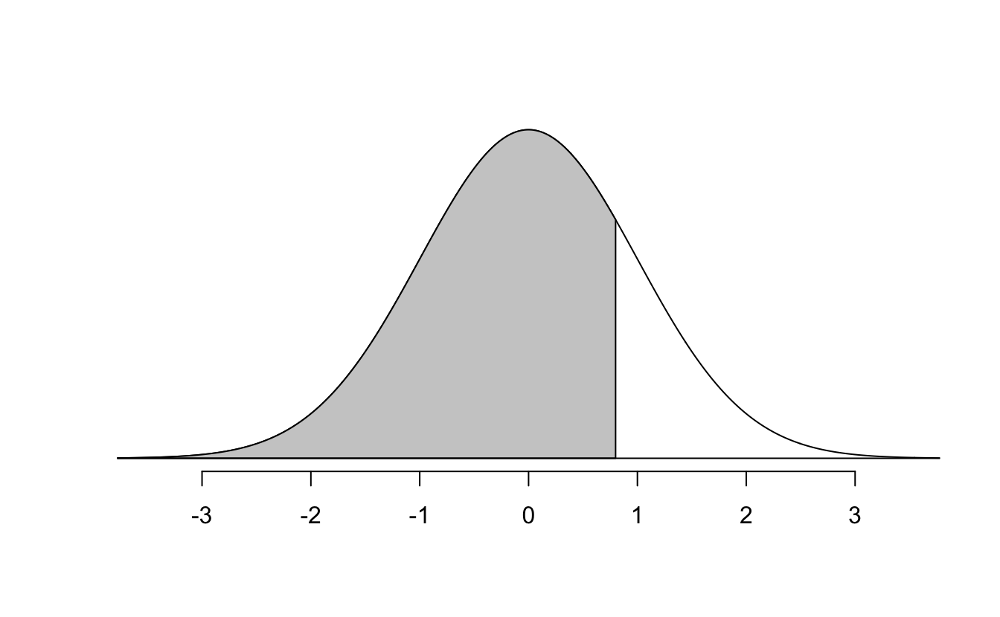
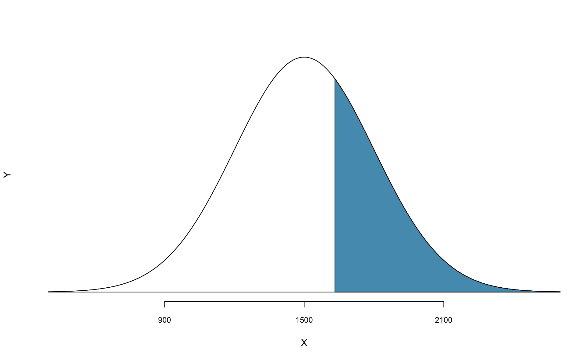
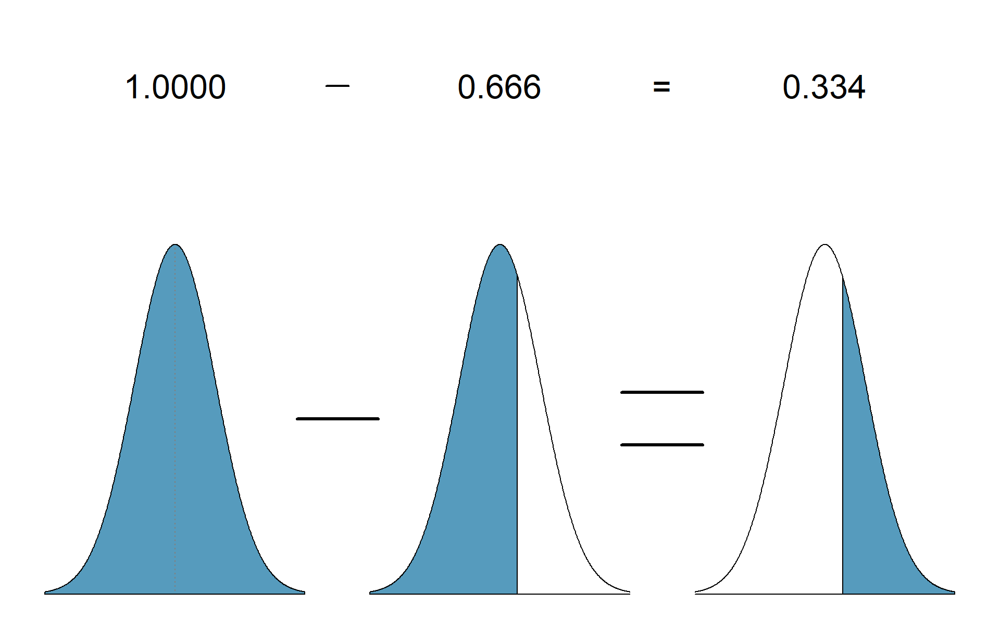
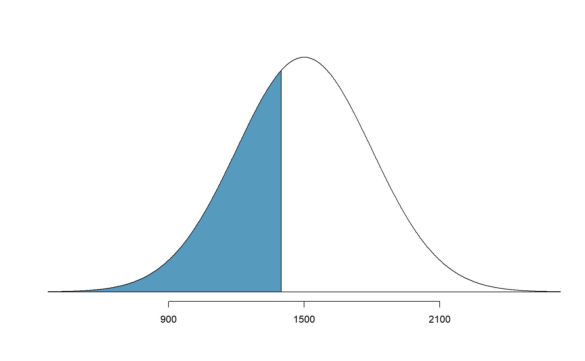
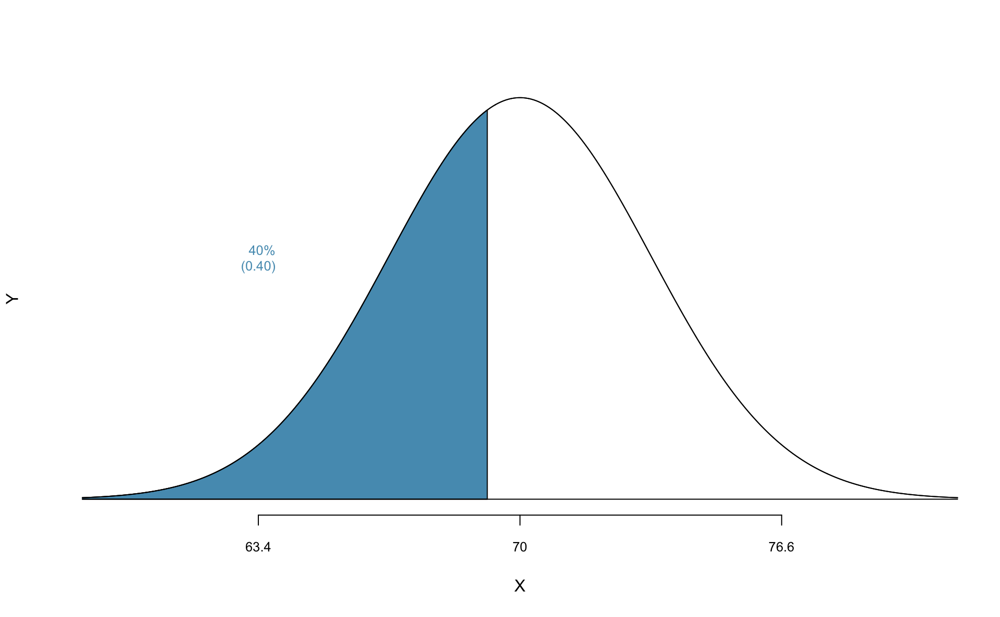
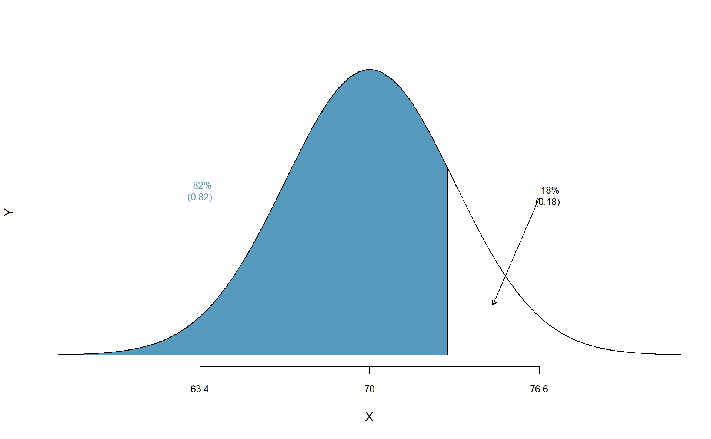
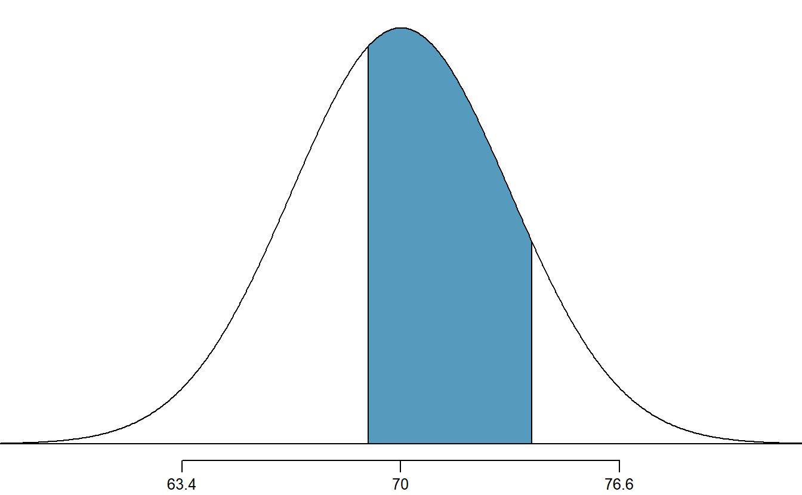
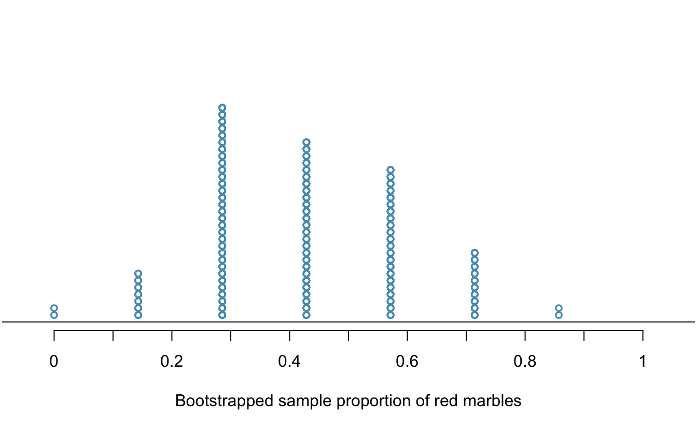
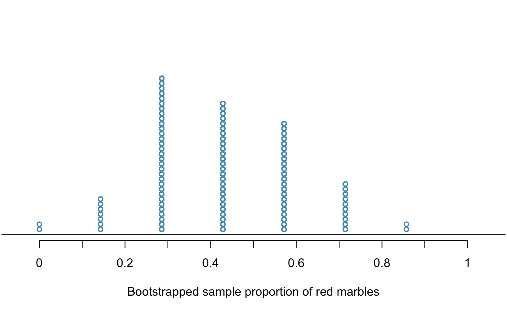

Chapter 5 Inference for categorical data
Statistical inference is primarily concerned with understanding and quantifying the uncertainty of parameter estimates—that is, how variable is a sample statistic from sample to sample? While the equations and details change depending on the setting, the foundations for inference are the same throughout all of statistics. We will begin this chapter with a discussion of the foundations of inference, and introduce the two primary vehicles of inference: the hypothesis test and confidence interval.
The rest of this chapter focuses on statistical inference for categorical data. The two data structures we detail are:
- one binary variable, summarized using a single proportion, and
- two binary variables, summarized using a difference (or ratio) of two proportions.
Throughout the book so far, you have worked with data in a variety of contexts. You have learned how to summarize and visualize the data as well as how to model multiple variables at the same time. Sometimes the data set at hand represents the entire research question. But more often than not, the data have been collected to answer a research question about a larger group of which the data are a (hopefully) representative subset.
You may agree that there is almost always variability in data (one data set will not be identical to a second data set even if they are both collected from the same population using the same methods). However, quantifying the variability in the data is neither obvious nor easy to do (how different is one data set from another?).
Suppose your professor splits the students in class into two groups: students on the left and students on the right. If \(\hat{p}_{_L}\) and \(\hat{p}_{_R}\) represent the proportion of students who own an Apple product on the left and right, respectively, would you be surprised if \(\hat{p}_{_L}\) did not exactly equal \(\hat{p}_{_R}\)?
While the proportions would probably be close to each other, it would be unusual for them to be exactly the same. We would probably observe a small difference due to chance.
Studying randomness of this form is a key focus of statistics. Throughout this chapter, and those that follow, we provide two different approaches for quantifying the variability inherent in data: simulation-based methods and theory-based methods (mathematical models). Using the methods provided in this and future chapters, we will be able to draw conclusions beyond the data set at hand to research questions about larger populations.
5.1 Foundations of inference
Given results seen in a sample, the process of determining what we can infer to the population based on sample results is called statistical inference. Statistical inferential methods enable us to understand and quantify the uncertainty of our sample results. Statistical inference helps us answer two questions about the population:
- How strong is the evidence of an effect?
- How large is the effect?
The first question is answered through a hypothesis test, while the second is addressed with a confidence interval.
Statistical inference is the practice of making decisions and conclusions from data in the context of uncertainty. Errors do occur, just like rare events, and the data set at hand might lead us to the wrong conclusion. While a given data set may not always lead us to a correct conclusion, statistical inference gives us tools to control and evaluate how often these errors occur.
5.1.1 Motivating example: Martian alphabet
How well can humans distinguish one “Martian” letter from another? The Figure 5.1 displays two Martian letters—one is Kiki and the another is Bumba. Which do you think is Kiki and which do you think is Bumba?59
![Two Martian letters: Bumba and Kiki. Do you think the letter Bumba is on the left or the right?^[Bumba is the Martian letter on the left!]](05/images/bumBa-KiKi.png)
Figure 5.1: Two Martian letters: Bumba and Kiki. Do you think the letter Bumba is on the left or the right?60
This same image and question were presented to an introductory statistics class of 38 students. In that class, 34 students correctly identified Bumba as the Martian letter on the left. Assuming we can’t read Martian, is this result surprising?
One of two possibilities occurred:
- We can’t read Martian, and these results just occurred by chance.
- We can read Martian, and these results reflect this ability.
To decide between these two possibilities, we could calculate the probability of observing such results in a randomly selected sample of 38 students, under the assumption that students were just guessing. If this probability is very low, we’d have reason to reject the first possibility in favor of the second. We can calculate this probability using one of two methods:
- Simulation-based method: simulate lots of samples (Classes) of 38 students under the assumption that students are just guessing, then calculate the proportion of these simulated samples where we saw 34 or more students guessing correctly, or
- Theory-based method: develop a mathematical model for the sample proportion in this scenario and use the model to calculate the probability.
For this situation—since “just guessing” means you have a 50% chance of guessing correctly—we could simulate a sample of 38 students’ guesses by flipping a coin 38 times and counting the number of times it lands on heads. Using a computer to repeat this process 1,000 times, we create the dot plot in Figure 5.2.
Figure 5.2: A dot plot of 1,000 sample proportions; each calculated by flipping a coin 38 times and calculating the proportion of times the coin landed on heads. None of the 1,000 simulations had sample proportion of at least 89%, which was the proportion observed in the study.
None of our simulated samples produce 34 of 38 correct guesses! That is, if students were just guessing, it is nearly impossible to observe 34 or more correct guesses in a sample of 38 students. Given this low probability, the more plausible possibility is 2. We can read Martian, and these results reflect this ability. We’ve just completed our first hypothesis test!
Now, obviously no one can read Martian, so a more realistic possibility is that humans tend to choose Bumba on the left more often than the right—there is a greater than 50% chance of choosing Bumba as the letter on the left. Even though we may think we’re guessing just by chance, we have a preference for Bumba on the left. It turns out that the explanation for this preference is called synesthesia, a tendency for humans to correlate sharp sounding noises (e.g., Kiki) with sharp looking images.62
But wait—we’re not done! We have evidence that humans tend to prefer Bumba on the left, but by how much? To answer this, we need a confidence interval—an interval of plausible values for the true probability humans will select Bumba as the left letter. The width of this interval is determined by how variable sample proportions are from sample to sample. It turns out, there is a mathematical model for this variability that we will explore later in this chapter. For now, let’s take the standard deviation from our simulated sample proportions as an estimate for this variability: 0.08. Since the simulated distribution of proportions is bell-shaped, we know about 95% of sample proportions should fall within two standard deviations of the true proportion, so we can add and subtract this margin of error to our sample proportion to calculate an approximate 95% confidence interval63: \[ \frac{34}{38} \pm 2\times 0.08 = 0.89 \pm 0.16 = (0.73, 1) \] Thus, based on this data, we are 95% confident that the probability a human guesses Bumba on the left is somewhere between 73% and 100%.
5.1.2 Variability in a statistic
There are two approaches to modeling how a statistic, such as a sample proportion, may vary from sample to sample. In the Martian alphabet example, we used a simulation-based approach to model this variability, using the standard deviation of the simulated distribution of sample proportions as a quantitative measure of this sampling variability. Simulation-based methods include the randomization tests and bootstrapping methods we will use in this textbook. We can also use a theory-based approach—one which makes use of mathematical modeling—and involves the normal and \(t\) probability distributions.
All of the theory-based methods discussed in this book work (under certain conditions) because of a very important theorem in Statistics called the Central Limit Theorem.
Central Limit Theorem.
For large sample sizes, the sampling distribution of a sample proportion (or sample mean) will appear to follow a bell-shaped curve called the normal distribution.An example of a perfect normal distribution is shown in Figure 5.3. While the mean (center) and standard deviation (variability) may change for different scenarios, the general shape remains roughly intact.
Figure 5.3: A normal curve.
Recall from Chapter 2 that a distribution of a variable is a description of the possible values it takes and how frequently each value occurs. In a sampling distribution, our “variable” is a sample statistic, and the sampling distribution is a description of the possible values a sample statistic takes and how frequently each value occurs when looking across many many possible samples. It is quite amazing that something like a sample proportion, summarizing a categorical variable, will have a bell-shaped sampling distribution if we sample large enough samples!
Theory-based methods also give us mathematical expressions for the standard deviation of a sampling distribution. For instance, if the true population proportion is \(\pi\), then the standard deviation of the sampling distribution of sample proportions—how far away we would expect a sample proportion to be away from the population proportion—is \[ SD(\hat{p}) = \sqrt{\frac{\pi(1-\pi)}{n}}. \] Typically, values of parameters such as \(\pi\) are unknown, so we are unable to calculate these standard deviations. In this case, we substitute our “best guess” for \(\pi\) in the formulas, either from a hypothesis or from a point estimate.
Standard error.
The standard deviation of a sampling distribution for a statistic represents how far away we would expect the statistic to land from the parameter.
Since the formulas for these standard deviations depend on unknown parameters, we substitute our “best guess” for \(\pi\) in the formulas, either from a hypothesis or from a point estimate. The resulting estimated standard deviation is called the standard error of the statistic.5.1.3 Hypothesis tests
In the Martian alphabet example, we utilized a hypothesis test, which is a formal technique for evaluating two competing possibilities. Each hypothesis test involves a null hypothesis, which represents either a skeptical perspective or a perspective of no difference or no effect, and an alternative hypothesis, which represents a new perspective such as the possibility that there has been a change or that there is a treatment effect in an experiment. The alternative hypothesis is usually the reason the scientists set out to do the research in the first place.
Null and alternative hypotheses.
When we observe an effect in a sample, we would like to determine if this observed effect represents an actual effect in the population, or whether it was simply due to chance. We label these two competing claims, \(H_0\) and \(H_A\), which are spoken as “H-nought” and “H_A”
The null hypothesis (\(H_0\)) often represents either a skeptical perspective or a claim to be tested. The alternative hypothesis (\(H_A\)) represents an alternative claim under consideration and is often represented by a range of possible values for the parameter of interest.The hypothesis testing framework is a very general tool, and we often use it without a second thought. If a person makes a somewhat unbelievable claim, we are initially skeptical. However, if there is sufficient evidence that supports the claim, we set aside our skepticism. The hallmarks of hypothesis testing are also found in the US court system.
The US court system
A US court considers two possible claims about a defendant: they are either innocent or guilty. If we set these claims up in a hypothesis framework, which would be the null hypothesis and which the alternative?
The jury considers whether the evidence is so convincing (strong) that there is no reasonable doubt regarding the person’s guilt. That is, the skeptical perspective (null hypothesis) is that the person is innocent until evidence is presented that convinces the jury that the person is guilty (alternative hypothesis). Analogously, in a hypothesis test, we assume the null hypothesis until evidence is presented that convinces us the alternative hypothesis is true.
Jurors examine the evidence to see whether it convincingly shows a defendant is guilty. Notice that if a jury finds a defendant not guilty, this does not necessarily mean the jury is confident in the person’s innocence. They are simply not convinced of the alternative that the person is guilty.
This is also the case with hypothesis testing: even if we fail to reject the null hypothesis, we typically do not accept the null hypothesis as truth. Failing to find strong evidence for the alternative hypothesis is not equivalent to providing evidence that the null hypothesis is true.
p-value
In the Martian alphabet example, we performed a simulation-based hypothesis test of the hypotheses:
\(H_0\): The chance a human chooses Bumba on the left is 50%.
\(H_A\): Humans have a preference for choosing Bumba on the left.
The research question—can humans read Martian?—was framed in the context of these hypotheses.
The null hypothesis (\(H_0\)) was a perspective of no effect (no ability to read Martian). The student data provided a point estimate of 89.5% (\(34/38 \times 100\)%) for the true probability of choosing Bumba on the left. We determined that observing such a sample proportion from chance alone (assuming \(H_0\)) would be rare—it would only happen in less than 1 out of 1000 samples. When results like these are inconsistent with \(H_0\), we reject \(H_0\) in favor of \(H_A\). Here, we concluded that humans have a preference for choosing Bumba on the left.
The less than 1-in-1000 chance is what we call a p-value, which is a probability quantifying the strength of the evidence against the null hypothesis and in favor of the alternative.
p-value.
The p-value is the probability of observing data at least as favorable to the alternative hypothesis as our current data set, if the null hypothesis were true. We typically use a summary statistic of the data, such as a proportion or difference in proportions, to help compute the p-value and evaluate the hypotheses. This summary value that is used to compute the p-value is often called the test statistic.When interpreting a p-value, remember that the definition of a p-value has three components. It is a (1) probability. What it is the probability of? It is the probability of (2) our observed sample statistic or one more extreme. Assuming what? It is the probability of our observed sample statistic or one more extreme, (3) assuming the null hypothesis is true:
- probability
- data65
- null hypothesis
What was the test statistic in the Martian alphabet example?
The test statistic in the the Martian alphabet example was the sample proportion, \(\frac{34}{38} = 0.895\) (or 89.5%). This is also the point estimate of the true probability that humans would choose Bumba on the left.
Since the p-value is a probability, its value will always be between 0 and 1. The closer the p-value is to 0, the stronger the evidence we have against the null hypothesis. Why? A small p-value means that our data are unlikely to occur, if the null hypothesis is true. We take that to mean that the null hypothesis isn’t a plausible assumption, and we reject it. This process mimics the scientific method—it is easier to disprove a theory than prove it. If scientists want to find evidence that a new drug reduces the risk of stroke, then they assume it doesn’t reduce the risk of stroke and then show that the observed data are so unlikely to occur that the more plausible explanation is that the drug works.
Think of p-values as a continuum of strength of evidence against the null, from 0 (extremely strong evidence) to 1 (no evidence). Beyond around 10%, the data provide no evidence against the null hypothesis. Be careful not to equate this with evidence for the null hypothesis, which is incorrect. The absence of evidence is not evidence of absence.
Figure 5.4: Strength of evidence against the null for a continuum of p-values. Once the p-value is beyond around 0.10, the data provide no evidence against the null hypothesis.
Regardless of the data structure or analysis method, the hypothesis testing framework always follows the same steps—only the details for how we model randomness in the data change.
General steps of a hypothesis test. Every hypothesis test follows these same general steps:
- Frame the research question in terms of hypotheses.
- Collect and summarize data using a test statistic.
- Assume the null hypothesis is true, and simulate or mathematically model a null distribution for the test statistic.
- Compare the observed test statistic to the null distribution to calculate a p-value.
- Make a conclusion based on the p-value, and write a conclusion in context, in plain language, and in terms of the alternative hypothesis.
Decisions and statistical significance
In some cases, a decision to the hypothesis test is needed, with the two possible decisions as follows:
- Reject the null hypothesis
- Fail to reject the null hypothesis
In order to decide between these two options, we need a previously set threshold for our p-value: when the p-value is less than a previously set threshold, we reject \(H_0\); otherwise, we fail to reject \(H_0\). This threshold is called the significance level, and when the p-value is less than the significance level, we say the results are statistically significant. This means the data provide such strong evidence against \(H_0\) that we reject the null hypothesis in favor of the alternative hypothesis. The significance level, often represented by \(\alpha\) (the Greek letter alpha), is typically set to \(\alpha = 0.05\), but can vary depending on the field or the application and the real-life consequences of an incorrect decision. Using a significance level of \(\alpha = 0.05\) in the Martian alphabet study, we can say that the data provided statistically significant evidence against the null hypothesis.
Statistical significance.
We say that the data provide statistically significant evidence against the null hypothesis if the p-value is less than some reference value called the significance level, denoted by \(\alpha\).What’s so special about 0.05?
We often use a threshold of 0.05 to determine whether a result is statistically significant. But why 0.05? Maybe we should use a bigger number, or maybe a smaller number. If you’re a little puzzled, that probably means you’re reading with a critical eye—good job! The OpenIntro authors have a video to help clarify why 0.05:Sometimes it’s also a good idea to deviate from the standard. We’ll discuss when to choose a threshold different than 0.05 in Section 5.4.1.
Statistical significance has been a hot topic in the news, related to the “reproducibility crisis” in some scientific fields. We encourage you to read more about the debate on the use of p-values and statistical significance. A good place to start would be the Nature article, “Scientists rise up against statistical significance,” from March 20, 2019.
5.1.4 Confidence intervals
A point estimate provides a single plausible value for a parameter. However, a point estimate is rarely perfect—usually there is some error in the estimate. In addition to supplying a point estimate of a parameter, a next logical step would be to provide a plausible range of values for the parameter.
A plausible range of values for the population parameter is called a confidence interval. Using only a single point estimate is like fishing in a murky lake with a spear, and using a confidence interval is like fishing with a net. We can throw a spear where we saw a fish, but we will probably miss. On the other hand, if we toss a net in that area, we have a good chance of catching the fish.
If we report a point estimate, we probably will not hit the exact population parameter. On the other hand, if we report a range of plausible values—a confidence interval—we have a good shot at capturing the parameter.
This reasoning also explains why we can never prove a null hypothesis. Sample statistics will vary from sample to sample. While we can quantify this uncertainty (e.g., we are 95% sure the statistic is within 0.15 of the parameter), we can never be certain that the parameter is an exact value. For example, suppose you want to test whether a coin is a fair coin, i.e., \(H_0: \pi = 0.50\) versus \(H_0: \pi \neq 0.50\), so you toss the coin 10 times to collect data. In those 10 tosses, 6 land on heads and 4 land on tails, resulting in a p-value of 0.75467. We don’t have enough evidence to show that the coin is biased, but surely we wouldn’t say we just proved the coin is fair!
We will explore both simulation-based methods (bootstrapping) and theory-based methods for creating confidence intervals in this text. Though the details change with different scenarios, theory-based confidence intervals will always take the form: \[ \mbox{statistic} \pm (\mbox{multiplier}) \times (\mbox{standard error of the statistic}) \] The statistic is our best guess for the value of the parameter, so it makes sense to build the confidence interval around that value. The standard error, which is a measure of the uncertainty associated with the statistic, provides a guide for how large we should make the confidence interval. The multiplier is determined by how confident we’d like to be, and tells us how many standard errors we need to add and subtract from the statistic. The amount we add and subtract from the statistic is called the margin of error.
General form of a confidence interval.
The general form of a theory-based confidence interval for an unknown parameter is \[ \mbox{statistic} \pm (\mbox{multiplier}) \times (\mbox{standard error of the statistic}) \] The amount we add and subtract to the statistic to calculate the confidence interval is called the margin of error. \[ \mbox{margin of error} = (\mbox{multiplier}) \times (\mbox{standard error of the statistic}) \]In Section 5.3.3 we will discuss different percentages for the confidence interval (e.g., 90% confidence interval or 99% confidence interval). Section 5.4.2 provides a longer discussion on what “95% confidence” actually means.
5.2 The normal distribution
Among all the distributions we see in statistics, one is overwhelmingly the most common. The symmetric, unimodal, bell curve is ubiquitous throughout statistics. It is so common that people know it as a variety of names including the normal curve, normal model, or normal distribution.70 Under certain conditions, sample proportions, sample means, and sample differences can be modeled using the normal distribution—the basis for our theory-based inference methods. Additionally, some variables such as SAT scores and heights of US adult males closely follow the normal distribution.
Normal distribution facts.
Many summary statistics and variables are nearly normal, but none are exactly normal. Thus the normal distribution, while not perfect for any single problem, is very useful for a variety of problems. We will use it in data exploration and to solve important problems in statistics.In this section, we will discuss the normal distribution in the context of data to become more familiar with normal distribution techniques.
5.2.1 Normal distribution model
The normal distribution always describes a symmetric, unimodal, bell-shaped curve. However, normal curves can look different depending on the details of the model. Specifically, the normal model can be adjusted using two parameters: mean and standard deviation. As you can probably guess, changing the mean shifts the bell curve to the left or right, while changing the standard deviation stretches or constricts the curve. Figure 5.5 shows the normal distribution with mean \(0\) and standard deviation \(1\) (which is commonly referred to as the standard normal distribution) on top. A normal distribution with mean \(19\) and standard deviation \(4\) is shown on the bottom. Figure 5.6 shows the same two normal distributions on the same axis.

Figure 5.5: Both curves represent the normal distribution, however, they differ in their center and spread. The normal distribution with mean 0 and standard deviation 1 is called the standard normal distribution.
Figure 5.6: The two normal models shown above and now plotted together on the same scale.
If a normal distribution has mean \(\mu\) and standard deviation \(\sigma\), we may write the distribution as \(N(\mu, \sigma)\). The two distributions in Figure 5.6 can be written as \[\begin{align*} N(\mu=0,\sigma=1)\quad\text{and}\quad N(\mu=19,\sigma=4) \end{align*}\] Because the mean and standard deviation describe a normal distribution exactly, they are called the distribution’s parameters.
5.2.2 Standardizing with Z-scores
| SAT | ACT | |
|---|---|---|
| Mean | 1500 | 21 |
| SD | 300 | 5 |

Figure 5.7: Ann’s and Tom’s scores shown with the distributions of SAT and ACT scores.
The solution to the previous example relies on a standardization technique called a Z-score, a method most commonly employed for nearly normal observations (but that may be used with any distribution). The Z-score of an observation is defined as the number of standard deviations it falls above or below the mean. If the observation is one standard deviation above the mean, its Z-score is 1. If it is 1.5 standard deviations below the mean, then its Z-score is -1.5. If \(x\) is an observation from a distribution \(N(\mu, \sigma)\), we define the Z-score mathematically as
\[\begin{eqnarray*} Z = \frac{x-\mu}{\sigma} \end{eqnarray*}\] Using \(\mu_{SAT}=1500\), \(\sigma_{SAT}=300\), and \(x_{Ann}=1800\), we find Ann’s Z-score: \[\begin{eqnarray*} Z_{Ann} = \frac{x_{Ann} - \mu_{SAT}}{\sigma_{SAT}} = \frac{1800-1500}{300} = 1 \end{eqnarray*}\]
The Z-score.
The Z-score of an observation is the number of standard deviations it falls above or below the mean. We compute the Z-score for an observation \(x\) that follows a distribution with mean \(\mu\) and standard deviation \(\sigma\) by first subtracting its mean, then dividing by its standard deviation: \[\begin{eqnarray*} Z = \frac{x-\mu}{\sigma} \end{eqnarray*}\]Observations above the mean always have positive Z-scores while those below the mean have negative Z-scores. If an observation is equal to the mean (e.g., SAT score of 1500), then the Z-score is \(0\).
We can use Z-scores to roughly identify which observations are more unusual than others. One observation \(x_1\) is said to be more unusual than another observation \(x_2\) if the absolute value of its Z-score is larger than the absolute value of the other observation’s Z-score: \(|Z_1| > |Z_2|\). This technique is especially insightful when a distribution is symmetric.
5.2.3 Normal probability calculations in R
Ann from the SAT Guided Practice earned a score of 1800 on her SAT with a corresponding \(Z=1\). She would like to know what percentile she falls in among all SAT test-takers.
Ann’s percentile is the percentage of people who earned a lower SAT score than Ann. We shade the area representing those individuals in Figure 5.8. The total area under the normal curve is always equal to 1, and the proportion of people who scored below Ann on the SAT is equal to the area shaded in Figure 5.8: 0.8413. In other words, Ann is in the \(84^{th}\) percentile of SAT takers.
Figure 5.8: The normal model for SAT scores, shading the area of those individuals who scored below Ann.
We can use the normal model to find percentiles or probabilities. In R, the function
to calculate normal probabilities is pnorm(). The normTail() function is available in the openintro R package and will draw the associated curve if it is helpful. In the code below, we find the percentile of \(Z=0.43\) is 0.6664, or the \(66.64^{th}\) percentile.
pnorm(0.43, m = 0, s = 1)
#> [1] 0.666
openintro::normTail(0.43, m = 0, s = 1)
We can also find the Z-score associated with a percentile.
For example, to identify Z for the \(80^{th}\) percentile, we use qnorm() which identifies the quantile for a given percentage. The quantile represents the cutoff value. (To remember the function qnorm() as providing a cutoff, notice that both qnorm() and “cutoff” start with the sound “kuh”. To remember the pnorm() function as providing a probability from a given cutoff, notice that both pnorm() and probability start with the sound “puh”.)
We determine the Z-score for the \(80^{th}\) percentile using qnorm(): 0.84.
qnorm(0.80, m = 0, s = 1)
#> [1] 0.842
openintro::normTail(0.80, m = 0, s = 1)
We can use these functions with other normal distributions than the standard normal distribution by specifying the mean as the argument for m and the standard deviation as the argument for s. Here we determine the proportion of ACT test takers who scored worse than Tom on the ACT: 0.73.
pnorm(24, m = 21, s = 5)
#> [1] 0.726
openintro::normTail(24, m = 21, s = 5)
5.2.4 Normal probability examples
Cumulative SAT scores are approximated well by a normal model, \(N(\mu=1500, \sigma=300)\).
Shannon is a randomly selected SAT taker, and nothing is known about Shannon’s SAT aptitude. What is the probability that Shannon scores at least 1630 on her SATs?
First, always draw and label a picture of the normal distribution. (Drawings need not be exact to be useful.) We are interested in the chance she scores above 1630, so we shade the upper tail. See the normal curve below.
The picture shows the mean and the values at 2 standard deviations above and below the mean. The simplest way to find the shaded area under the curve makes use of the Z-score of the cutoff value. With \(\mu=1500\), \(\sigma=300\), and the cutoff value \(x=1630\), the Z-score is computed as \[\begin{eqnarray*} Z = \frac{x - \mu}{\sigma} = \frac{1630 - 1500}{300} = \frac{130}{300} = 0.43 \end{eqnarray*}\] We use software to find the percentile of \(Z=0.43\), which yields 0.6664. However, the percentile describes those who had a Z-score lower than 0.43. To find the area above \(Z=0.43\), we compute one minus the area of the lower tail, as seen below.
The probability Shannon scores at least 1630 on the SAT is 0.3336.

Always draw a picture first, and find the Z-score second.
For any normal probability situation, always always always draw and label the normal curve and shade the area of interest first. The picture will provide an estimate of the probability.
After drawing a figure to represent the situation, identify the Z-score for the observation of interest.Edward earned a 1400 on his SAT. What is his percentile?
First, a picture is needed. Edward’s percentile is the proportion of people who do not get as high as a 1400. These are the scores to the left of 1400.
Identifying the mean \(\mu=1500\), the standard deviation \(\sigma=300\), and the cutoff for the tail area \(x=1400\) makes it easy to compute the Z-score: \[\begin{eqnarray*} Z = \frac{x - \mu}{\sigma} = \frac{1400 - 1500}{300} = -0.3333 \end{eqnarray*}\] Using thepnorm() function (either pnorm(-1/3) or pnorm(1400, m=1500, s=300) will give the desired result), the desired probability is \(0.3694\). Edward is at the \(37^{th}\) percentile.

Areas to the right.
Thepnorm() function (and the normal probability table in most books) gives the area to the left. If you would like the area to the right, first find the area to the left and then subtract this amount from one. In R, you can also do this by setting the lower.tail argument to FALSE.
Based on a sample of 100 men,81 the heights of male adults between the ages 20 and 62 in the US is nearly normal with mean 70.0’’ and standard deviation 3.3’’.
The last several problems have focused on finding the probability or percentile for a particular observation. What if you would like to know the observation corresponding to a particular percentile?
Erik’s height is at the \(40^{th}\) percentile. How tall is he?
As always, first draw the picture (see below).
In this case, the lower tail probability is known (0.40), which can be shaded on the diagram. We want to find the observation that corresponds to this value. As a first step in this direction, we determine the Z-score associated with the \(40^{th}\) percentile.
Because the percentile is below 50%, we know \(Z\) will be negative. Looking in the negative part of the normal probability table, we search for the probability inside the table closest to 0.4000. We find that 0.4000 falls in row \(-0.2\) and between columns \(0.05\) and \(0.06\). Since it falls closer to \(0.05\), we take this one: \(Z=-0.25\).
Knowing \(Z_{Erik}=-0.25\) and the population parameters \(\mu=70\) and \(\sigma=3.3\) inches, the Z-score formula can be set up to determine Erik’s unknown height, labeled \(x_{Erik}\): \[\begin{eqnarray*} -0.25 = Z_{Erik} = \frac{x_{Erik} - \mu}{\sigma} = \frac{x_{Erik} - 70}{3.3} \end{eqnarray*}\] Solving for \(x_{Erik}\) yields the height 69.18 inches. That is, Erik is about 5’9’’ (this is notation for 5-feet, 9-inches).qnorm(0.4, m = 0, s = 1)
#> [1] -0.253
What is the adult male height at the \(82^{nd}\) percentile?
Again, we draw the figure first (see below).
Next, we want to find the Z-score at the \(82^{nd}\) percentile, which will be a positive value. Usingqnorm(), the \(82^{nd}\) percentile corresponds to \(Z=0.92\). Finally, the height \(x\) is found using the Z-score formula with the known mean \(\mu\), standard deviation \(\sigma\), and Z-score \(Z=0.92\):
\[\begin{eqnarray*}
0.92 = Z = \frac{x-\mu}{\sigma} = \frac{x - 70}{3.3}
\end{eqnarray*}\]
This yields 73.04 inches or about 6’1’’ as the height at the \(82^{nd}\) percentile.
qnorm(0.82, m = 0, s = 1)
#> [1] 0.915
- What is the \(95^{th}\) percentile for SAT scores?
- What is the \(97.5^{th}\) percentile of the male heights? As always with normal probability problems, first draw a picture.83
- What is the probability that a randomly selected male adult is at least 6’2’’ (74 inches)?
- What is the probability that a male adult is shorter than 5’9’’ (69 inches)?84
What is the probability that a random adult male is between 5’9’’ and 6’2’’?
These heights correspond to 69 inches and 74 inches. First, draw the figure. The area of interest is no longer an upper or lower tail.
The total area under the curve is 1. If we find the area of the two tails that are not shaded (from the previous Guided Practice, these areas are \(0.3821\) and \(0.1131\)), then we can find the middle area:
That is, the probability of being between 5’9’’ and 6’2’’ is 0.5048.

5.2.5 68-95-99.7 rule
Here, we present a useful general rule for the probability of falling within 1, 2, and 3 standard deviations of the mean in the normal distribution. The rule will be useful in a wide range of practical settings, especially when trying to make a quick estimate without a calculator or Z table.
Figure 5.9: Probabilities for falling within 1, 2, and 3 standard deviations of the mean in a normal distribution.
pnorm() to confirm that about 68%, 95%, and 99.7% of observations fall within 1, 2, and 3, standard deviations of the mean in the normal distribution, respectively. For instance, first find the area that falls between \(Z=-1\) and \(Z=1\), which should have an area of about 0.68. Similarly there should be an area of about 0.95 between \(Z=-2\) and \(Z=2\).87
It is possible for a normal random variable to fall 4, 5, or even more standard deviations from the mean. However, these occurrences are very rare if the data are nearly normal. The probability of being further than 4 standard deviations from the mean is about 1-in-30,000. For 5 and 6 standard deviations, it is about 1-in-3.5 million and 1-in-1 billion, respectively.
(a) About what percent of test takers score 900 to 2100?
(b) What percent score between 1500 and 2100?88
5.3 One proportion
Notation.
- \(n\) = sample size (number of observational units in the data set)
- \(\hat{p}\) = sample proportion (number of “successes” divided by the sample size)
- \(\pi\) = population proportion89
A single proportion is used to summarize data when we measured a single categorical variable on each observational unit—the single variable is measured as either a success or failure (e.g., “surgical complication” vs. “no surgical complication”)90.
5.3.1 Simulation-based test for \(H_0: \pi = \pi_0\)
In Section 5.1.3, we introduced the general steps of a hypothesis test:
General steps of a hypothesis test. Every hypothesis test follows these same general steps:
- Frame the research question in terms of hypotheses.
- Collect and summarize data using a test statistic.
- Assume the null hypothesis is true, and simulate or mathematically model a null distribution for the test statistic.
- Compare the observed test statistic to the null distribution to calculate a p-value.
- Make a conclusion based on the p-value, and write a conclusion in context, in plain language, and in terms of the alternative hypothesis.
People providing an organ for donation sometimes seek the help of a special medical consultant. These consultants assist the patient in all aspects of the surgery, with the goal of reducing the possibility of complications during the medical procedure and recovery. Patients might choose a consultant based in part on the historical complication rate of the consultant’s clients.
One consultant tried to attract patients by noting the average complication rate for liver donor surgeries in the US is about 10%, but her clients have had only 3 complications in the 62 liver donor surgeries she has facilitated. She claims this is strong evidence that her work meaningfully contributes to reducing complications (and therefore she should be hired!).
Using these data, is it possible to assess the consultant’s claim that her work meaningfully contributes to reducing complications?
No. The claim is that there is a causal connection, but the data are observational, so we must be on the lookout for confounding variables. For example, maybe patients who can afford a medical consultant can afford better medical care, which can also lead to a lower complication rate.
While it is not possible to assess the causal claim, it is still possible to understand the consultant’s true rate of complications.Steps 1 and 2: Hypotheses and test statistic
Regardless of if we use simulation-based methods or theory-based methods, the first two steps of a hypothesis test start out the same: setting up hypotheses and summarizing data with a test statistic. We will let \(\pi\) represent the true complication rate for liver donors working with this consultant. This “true” complication probability is called the parameter of interest91.) The sample proportion for the complication rate is 3 complications divided by the 62 surgeries the consultant has worked on: \(\hat{p} = 3/62 = 0.048\). Since this value is estimated from sample data, it is called a statistic. The statistic \(\hat{p}\) is also our point estimate, or “best guess,” for \(\pi\), and we will use is as our test statistic.
Parameters and statistics.
A parameter is the “true” value of interest. We typically estimate the parameter using a statistic from a sample of data. When a statistic is used as an estimate of a parameter, it is called a point estimate.
For example, we estimate the probability \(\pi\) of a complication for a client of the medical consultant by examining the past complications rates of her clients:
\[\hat{p} = 3 / 62 = 0.048\qquad\text{is used to estimate}\qquad \pi\]Summary measures that summarize a sample of data, such as \(\hat{p}\), are called statistics. Numbers that summarize an entire population, such as \(\pi\), are called parameters. You can remember this distinction by looking at the first letter of each term:
We typically use Roman letters to symbolize statistics (e.g., \(\bar{x}\), \(\hat{p}\)), and Greek letters to symbolize parameters (e.g., \(\mu\), \(\pi\)). Since we rarely can measure the entire population, and thus rarely know the actual parameter values, we like to say, “We don’t know Greek, and we don’t know parameters!”Statistics summarize Samples.
Parameters summarize Populations.
Write out hypotheses in both plain and statistical language to test for the association between the consultant’s work and the true complication rate, \(\pi\), for the consultant’s clients.
In words:
\(H_0\): There is no association between the consultant’s contributions and the clients’ complication rate.
\(H_A\): Patients who work with the consultant tend to have a complication rate lower than 10%.
In statistical language:
\(H_0: \pi=0.10\)
\(H_A: \pi<0.10\)
Steps 3 and 4: Null distribution and p-value
To assess these hypotheses, we need to evaluate the possibility of getting a sample proportion as far below the null value, \(0.10\), as what was observed (\(0.048\)), if the null hypothesis were true.
Null value of a hypothesis test.
The null value is the reference value for the parameter in \(H_0\), and it is sometimes represented with the parameter’s label with a subscript 0 (or “null”), e.g., \(\pi_0\) (just like \(H_0\)).The deviation of the sample statistic from the null hypothesized parameter is usually quantified with a p-value92. The p-value is computed based on the null distribution, which is the distribution of the test statistic if the null hypothesis is true. Supposing the null hypothesis is true, we can compute the p-value by identifying the chance of observing a test statistic that favors the alternative hypothesis at least as strongly as the observed test statistic.
Null distribution.
The null distribution of a test statistic is the sampling distribution of that statistic under the assumption of the null hypothesis. It describes how that statistic would vary from sample to sample, if the null hypothesis were true.
The null distribution can be estimated through simulation (simulation-based methods), as in this section, or can be modeled by a mathematical function (theory-based methods), as in Section 5.3.3.We want to identify the sampling distribution of the test statistic (\(\hat{p}\)) if the null hypothesis was true. In other words, we want to see how the sample proportion changes due to chance alone. Then we plan to use this information to decide whether there is enough evidence to reject the null hypothesis.
Under the null hypothesis, 10% of liver donors have complications during or after surgery. Suppose this rate was really no different for the consultant’s clients (for all the consultant’s clients, not just the 62 previously measured). If this was the case, we could simulate 62 clients to get a sample proportion for the complication rate from the null distribution.
This is a similar scenario to the one we encountered in Section 5.1.1, with one important difference—the null value is 0.10, not 0.50. Thus, a flipping a coin to simulate whether a client had complications would not be simulating under the correct null hypothesis.
Assuming the true complication rate for the consultant’s clients is 10%, each client can be simulated using a bag of marbles with 10% red marbles and 90% white marbles. Sampling a marble from the bag (with 10% red marbles) is one way of simulating whether a patient has a complication if the true complication rate is 10% for the data. If we select 62 marbles and then compute the proportion of patients with complications in the simulation, \(\hat{p}_{sim}\), then the resulting sample proportion is calculated exactly from a sample from the null distribution.
An undergraduate student was paid $2 to complete this simulation. There were 5 simulated cases with a complication and 57 simulated cases without a complication, i.e., \(\hat{p}_{sim} = 5/62 = 0.081\).
Is this one simulation enough to determine whether or not we should reject the null hypothesis?
No. To assess the hypotheses, we need to see a distribution of many \(\hat{p}_{sim}\), not just a single draw from this sampling distribution.
One simulation isn’t enough to get a sense of the null distribution; many simulation studies are needed. Roughly 10,000 seems sufficient. However, paying someone to simulate 10,000 studies by hand is a waste of time and money. Instead, simulations are typically programmed into a computer, which is much more efficient.
Figure 5.10 shows the results of 10,000 simulated studies. The proportions that are equal to or less than \(\hat{p}=0.048\) are shaded. The shaded areas represent sample proportions under the null distribution that provide at least as much evidence as \(\hat{p}\) favoring the alternative hypothesis. There were 1222 simulated sample proportions with \(\hat{p}_{sim} \leq 0.048\). We use these to construct the null distribution’s left-tail area and find the p-value: \[\begin{align} \text{left tail area }\label{estOfPValueBasedOnSimulatedNullForSingleProportion} &= \frac{\text{Number of observed simulations with }\hat{p}_{sim}\leq\text{ 0.048}}{10000} \end{align}\] Of the 10,000 simulated \(\hat{p}_{sim}\), 1222 were equal to or smaller than \(\hat{p}\). Since the hypothesis test is one-sided, the estimated p-value is equal to this tail area: 0.1222.
Figure 5.10: The null distribution for \(\hat{p}\), created from 10,000 simulated studies. The left tail, representing the p-value for the hypothesis test, contains 12.22% of the simulations.
Step 5: Conclusion
5.3.2 Bootstrap confidence interval for \(\pi\)
A confidence interval provides a range of plausible values for the parameter \(\pi\). If the goal is to produce a range of possible values for a population value, then in an ideal world, we would sample data from the population again and recompute the sample proportion. Then we could do it again. And again. And so on until we have a good sense of the variability of our original estimate. The ideal world where sampling data is free or extremely cheap is almost never the case, and taking repeated samples from a population is usually impossible. So, instead of using a “resample from the population” approach, bootstrapping uses a “resample from the sample” approach.
Let’s revisit our medical consultant example from Section 5.3.1. This consultant tried to attract patients by noting the average complication rate for liver donor surgeries in the US is about 10%, but her clients have had only 3 complications in the 62 liver donor surgeries she has facilitated. This data, however, did not provide sufficient evidence that the consultant’s complication rate was less than 10%, since the p-value was approximately 0.122. Does this mean we can conclude that the consultant’s complication rate was equal to 10%?
No! Though our decision was to fail to reject the null hypothesis, this does not mean we have evidence for the null hypothesis—we cannot “accept” the null. The sample proportion was \(\hat{p} = 3/62 = 0.048\), which is our point estimate—or “best guess”—of \(\pi\). It wouldn’t make sense that a sample complication rate of 4.8% gives us evidence that the true complication rate was exactly 10%. It`s plausible that the true complication rate is 10%, but there are a range of plausible values for \(\pi\). In this section, we will use a simulation-based method called bootstrapping to generate this range of plausible values for \(\pi\) using the observed data.
In the medical consultant case study, the parameter is \(\pi\), the true probability of a complication for a client of the medical consultant. There is no reason to believe that \(\pi\) is exactly \(\hat{p} = 3/62\), but there is also no reason to believe that \(\pi\) is particularly far from \(\hat{p} = 3/62\). By sampling with replacement from the data set (a process called bootstrapping), the variability of the possible \(\hat{p}\) values can be approximated, which will allow us to generate a range of plausible values for \(\pi\), i.e., a confidence interval.
Most of the inferential procedures covered in this text are grounded in quantifying how one data set would differ from another when they are both taken from the same population. It doesn’t make sense to take repeated samples from the same population because if you have the means to take more samples, a larger sample size will benefit you more than the exact same sample twice. Instead, we measure how the samples behave under an estimate of the population. Figure 5.11 shows how an unknown original population of red and white marbles can be estimated by using multiple copies of a sample of seven marbles.

Figure 5.11: An unknown population of red and white marbles. The estimated population on the right is many copies of the observed sample.
By taking repeated samples from the estimated population, the variability from sample to sample can be observed. In Figure 5.12 the repeated bootstrap samples are obviously different both from each other, from the original sample, and from the original population. Recall that the bootstrap samples were taken from the same (estimated) population, and so the differences are due entirely to natural variability in the sampling procedure.

Figure 5.12: Selecting \(k\) random samples from the estimated population created from copies of the observed sample.
By summarizing each of the bootstrap samples (here, using the sample proportion), we see, directly, the variability of the sample proportion of red marbles, \(\hat{p}\), from sample to sample. The distribution of bootstrapped \(\hat{p}\)’s for the example scenario is shown in Figure 5.13, and the bootstrap distribution for the medical consultant data is shown in Figure 5.14.
 

Figure 5.13: Calculate the sample proportion of red marbles in each bootstrap resample, then plot these simulated sample proportions in a dot plot. The dot plot of sample proportion provides us a sense of how sample proportions would vary from sample to sample if we could take many samples from our original population.
It turns out that in practice, it is very difficult for computers to work with an infinite population (with the same proportional breakdown as in the sample). However, there is a physical and computational model which produces an equivalent bootstrap distribution of the sample proportion in a computationally efficient manner. Consider the observed data to be a bag of marbles 3 of which are red and 4 of which are white. By drawing the marbles out of the bag with replacement, we depict the same sampling process as was done with the infinitely large estimated population. Note that when sampling the original observations with replacement, a particular marble may end up in the new sample one time, multiple times, or not at all.
Bootstrapping96 from one sample.
- Take a random sample of size \(n\) from the original sample, with replacement. This is called a bootstrapped resample.
- Record the sample proportion (or statistic of interest) from the boostrapped resample. This is called a bootstrapped statistic.
- Repeat steps (1) and (2) 1000s of times to create a distribution of bootstrapped statistics.
If we apply the bootstrap sampling process to the medical consultant example, we consider each client to be one of the marbles in the bag. There will be 59 white marbles (no complication) and 3 red marbles (complication). If we 62 choose marbles out of the bag (one at a time), replacing each chosen marble after its color is recorded, and compute the proportion of simulated patients with complications, \(\hat{p}_{bs}\), then this “bootstrap” proportion represents a single simulated proportion from the “resample from the sample” approach.
One simulated bootstrap resample isn’t enough to get a sense of the variability from one bootstrap proportion to another bootstrap proportion, so we repeated the simulation 10,000 times using a computer. Figure 5.14 shows the distribution from the 10,000 bootstrap simulations. The bootstrapped proportions vary from about zero to 0.15. By taking the range of the middle 95% of this distribution, we can construct a 95% bootstrapped confidence interval for \(\pi\). The 2.5th percentile is 0, and the 97.5th percentile is 0.113, so the middle 95% of the distribution is the range (0, 0.113). The variability in the bootstrapped proportions leads us to believe that the true risk of complication (the parameter, \(\pi\)) is somewhere between 0 and 11.3%.
Figure 5.14: The original medical consultant data is bootstrapped 10,000 times. Each simulation creates a sample from the original data where the probability of a complication is \(\hat{p} = 3/62\). The bootstrap 2.5 percentile proportion is 0 and the 97.5 percentile is 0.113. The result is: we are confident that, in the population, the true probability of a complication is between 0% and 11.3%.
The original claim was that the consultant’s true rate of complication was under the national rate of 10%. Does the interval estimate of 0 to 11.3% for the true probability of complication indicate that the surgical consultant has a lower rate of complications than the national average? Explain.
No. Because the interval overlaps 10%, it might be that the consultant’s work is associated with a lower risk of complciations, or it might be that the consulant’s work is associated with a higher risk (i.e., greater than 10%) of complications! Additionally, as previously mentioned, because this is an observational study, even if an association can be measured, there is no evidence that the consultant’s work is the cause of the complication rate (being higher or lower).
5.3.3 Theory-based methods for \(\pi\)
In Section 5.1.2, we introduced the normal distribution and showed how it can be used as a mathematical model to describe the variability of a sample mean or sample proportion as a result of the Central Limit Theorem. We explored the normal distribution further in Section 5.2. Theory-based hypothesis tests and confidence intervals for proportions use the normal distribution to calculate the p-value and to determine the width of the confidence interval.
Variability of \(\hat{p}\)
There are conditions under which a sample proportion \(\hat{p}\) is well-modeled using a normal distribution. When the sample observations are independent and the sample size is sufficiently large, the normal model will describe the variability quite well; when the observations violate the conditions, the normal model can be inaccurate.
Conditions for the sampling distribution of \(\hat{p}\) to be normal.
The sampling distribution for \(\hat{p}\) based on a sample of size \(n\) from a population with a true proportion \(\pi\) can be modeled using a normal distribution when:
- Independence. The sample’s observations are independent, e.g., are from a simple random sample.
- Success-failure condition. We expected to see at least 10 successes and 10 failures in the sample, i.e., \(n\pi\geq10\) and \(n(1-\pi)\geq10\).
Typically we don’t know the true proportion \(\pi\), so we substitute some value to check the success-failure condition and to estimate the standard deviation of the sampling distribution of \(\hat{p}\). The independence condition is a more nuanced requirement. When it isn’t met, it is important to understand how and why it isn’t met. For example, there exist no statistical methods available to truly correct the inherent biases of data from a convenience sample. On the other hand, if we took a cluster random sample (see Section 1.3.4), the observations wouldn’t be independent, but suitable statistical methods are available for analyzing the data (but they are beyond the scope of even most second or third courses in statistics)98.
In the examples based on large sample theory, we modeled \(\hat{p}\) using the normal distribution. Why is this not appropriate for the study on the medical consultant?
The independence assumption may be reasonable if each of the surgeries is from a different surgical team. However, the success-failure condition is not satisfied. Under the null hypothesis, we would anticipate seeing \(62\times 0.10=6.2\) complications, not the 10 required for the normal approximation.
Since theory-based methods cannot be used on the medical consultant example, we’ll turn to another example to demonstrate these methods, where conditions for approximating the distribution of \(\hat{p}\) by a normal distribution are met.
Hypothesis test for \(H_0: \pi = \pi_0\)
One possible regulation for payday lenders is that they would be required to do a credit check and evaluate debt payments against the borrower’s finances. We would like to know: would borrowers support this form of regulation?
Set up hypotheses to evaluate whether borrowers have a majority support for this type of regulation. We take “majority” to mean greater than 50% of the population.
In words,
- \(H_0\): there is not majority support for the regulation
- \(H_A\): the majority of borrowers support the regulation
In statistical notation,
- \(H_0\): \(\pi = 0.50\)
- \(H_A\): \(\pi > 0.50\),
Note that the null hypothesis above was stated as \(H_0: \pi = 0.50\), even though saying there is “not majority support” would imply \(\pi \leq 0.50\). Indeed, some textbooks would write \(H_0: \pi \leq 0.50\) in this case, and it is not an incorrect statement. However, when calculating the p-value, we need to assume a particular value for \(\pi\) under the null hypothesis, so in this textbook, our null hypothesis will always be of the form:
\[ H_0: \mbox{ parameter } = \mbox{ null value} \]To apply the normal distribution to model the null distribution, the independence and success-failure conditions must be satisfied. In a hypothesis test, the success-failure condition is checked using the null proportion: we verify \(np_0\) and \(n(1-p_0)\) are at least 10, where \(p_0\) is the null value.
Continuing the previous Example, evaluate whether the poll on lending regulations provides convincing evidence that a majority of payday loan borrowers support a new regulation that would require lenders to pull credit reports and evaluate debt payments.
With hypotheses already set up and conditions checked, we can move onto calculations. The standard error in the context of a one-proportion hypothesis test is computed using the null value, \(p_0\): \[\begin{align*} SE = \sqrt{\frac{p_0 (1 - p_0)}{n}} = \sqrt{\frac{0.5 (1 - 0.5)}{826}} = 0.017 \end{align*}\] A picture of the normal model for the null distribution of sample proportions in this scenario is shown below in Figure 5.15, with the p-value represented by the shaded region. Note that this null distribution is centered at 0.50, the null value, and has standard deviation 0.017.
Under \(H_0\), the probability of observing \(\hat{p} = 0.51\) or higher is 0.278, the area above 0.51 on the null distribution.
With a p-value of 0.278, the poll does not provide convincing evidence that a majority of payday loan borrowers support regulations around credit checks and evaluation of debt payments.
You’ll note that this conclusion is somewhat unsatisfactory because there is no conclusion, as is the case with larger p-values. That is, there is no resolution one way or the other about public opinion. We cannot claim that exactly 50% of people support the regulation, but we cannot claim a majority support it either.Figure 5.15: Approximate sampling distribution of \(\hat{p}\) across all possible samples assuming \(\pi = 0.50\). The shaded area represents the p-value corresponding to an observed sample proportion of 0.51.
Often, with theory-based methods, we use a standardized statistic rather than the original statistic as our test statistic. A standardized statistic is computed by subtracting the mean of the null distribution from the original statistic, then dividing by the standard error: \[ \mbox{standardized statistic} = \frac{\mbox{observed statistic} - \mbox{null value}}{\mbox{null standard error}} \] The null standard error of the observed statistic is its estimated standard deviation assuming the null hypothesis is true. We can interpret the standardized statistic as the number of standard errors our observed statistic is above (if positive) or below (if negative) the null value. When we are modeling the null distribution with a normal distribution, this standardized statistic is called \(Z\), since it is the Z-score of the sample proportion.
Standardized sample proportion.
The standardized statistic for theory-based methods for one proportion is \[ Z = \frac{\hat{p} - p_0}{\sqrt{\frac{p_0(1-p_0)}{n}}} \] where \(p_0\) is the null value. The denominator, \(\sqrt{\frac{p_0(1-p_0)}{n}}\), is called the null standard error of the sample proportion.With the standardized statistic as our test statistic, we can find the p-value as the area under a standard normal distribution at or more extreme than our observed \(Z\) value.
Do payday loan borrowers support a regulation that would require lenders to pull their credit report and evaluate their debt payments? From a random sample of 826 borrowers, 51% said they would support such a regulation. We set up hypotheses and checked conditions previously. Now calculate and interpret the standardized statistic, then use the standard normal distribution to calculate the approximate p-value.
Our sample proportion is \(\hat{p} = 0.51\). Since our null value is \(p_0 = 0.50\),
the null standard error is
\[\begin{align*}
SE = \sqrt{\frac{p_0 (1 - p_0)}{n}}
= \sqrt{\frac{0.5 (1 - 0.5)}{826}}
= 0.017
\end{align*}\]
The standardized statistic is \[\begin{align*} Z = \frac{0.51 - 0.50}{0.017} = 0.57 \end{align*}\]
Interpreting this value, we can say that our sample proportion of 0.51 was only 0.57 standard errors above the null value of 0.50.
Shown in Figure 5.16, the p-value is the area above \(Z = 0.57\) on a standard normal distribution—0.278—the same p-value we would obtain by finding the area above \(\hat{p} = 0.51\) on a normal distribution with mean 0.50 and standard deviation 0.017, as in Figure 5.15.Figure 5.16: Approximate sampling distribution of \(Z\) across all possible samples assuming \(\pi = 0.50\). The shaded area represents the p-value corresponding to an observed standardized statistic of 0.57. Compare to Figure @ ef(fig:paydatCC-norm-pvalue)
Theory-based hypothesis test for a proportion: one-sample \(Z\)-test.
- Frame the research question in terms of hypotheses.
- Using the null value, \(p_0\), verify the conditions for using the normal distribution to approximate the null distribution.
- Calculate the test statistic: \[ Z = \frac{\hat{p} - p_0}{\sqrt{\frac{p_0(1-p_0)}{n}}} \]
- Use the test statistic and the standard normal distribution to calculate the p-value.
- Make a conclusion based on the p-value, and write a conclusion in context, in plain language, and in terms of the alternative hypothesis.
Regardless of the statistical method chosen, the p-value is always derived by analyzing the null distribution of the test statistic. The normal model poorly approximates the null distribution for \(\hat{p}\) when the success-failure condition is not satisfied. As a substitute, we can generate the null distribution using simulated sample proportions and use this distribution to compute the tail area, i.e., the p-value. Neither the p-value approximated by the normal distribution nor the simulated p-value are exact, because the normal distribution and simulated null distribution themselves are not exact, only a close approximation. An exact p-value can be generated using the binomial distribution, but that method will not be covered in this text.
Confidence interval for \(\pi\)
A confidence interval provides a range of plausible values for the parameter \(\pi\). A point estimate is our best guess for the value of the parameter, so it makes sense to build the confidence interval around that value. The standard error, which is a measure of the uncertainty associated with the point estimate, provides a guide for how large we should make the confidence interval. When \(\hat{p}\) can be modeled using a normal distribution, the 68-95-99.7 rule tells us that, in general, 95% of observations are within 2 standard errors of the mean. Here, we use the value 1.96 to be slightly more precise. The confidence interval for \(\pi\) then takes the form \[\begin{align*} \hat{p} \pm z^{\star} \times SE. \end{align*}\]
We have seen \(\hat{p}\) to be the sample proportion. The value \(z^{\star}\) comes from a standard normal distribution and is determined by the chosen confidence level. The value of the standard error, \(SE\), approximates how far we would expect the sample proportion to fall from \(\pi\), and depends heavily on the sample size.
Standard error of one proportion, \(\hat{p}\).
When the conditions are met so that the distribution fo \(\hat{p}\) is nearly normal, the variability of a single proportion, \(\hat{p}\) is well described by its standard deviation:
\[SD(\hat{p}) = \sqrt{\frac{\pi(1-\pi)}{n}}\]
Note that we almost never know the true value of \(\pi\), but we can substitute our best guess of \(\pi\) to obtain an approximate standard deviation, called the standard error of \(\hat{p}\):
\[SD(\hat{p}) \approx \hspace{3mm} SE(\hat{p}) = \sqrt{\frac{(\mbox{best guess of }\pi)(1 - \mbox{best guess of }\pi)}{n}}\]
For hypothesis testing, we often use \(p_0\) as the best guess of \(\pi\), as seen in Section 5.3.3. For confidence intervals, we typically use \(\hat{p}\) as the best guess of \(\pi\).Consider taking many polls of registered voters (i.e., random samples) of size 300 and asking them if they support legalized marijuana. It is suspected that about 2/3 of all voters support legalized marijuana. To understand how the sample proportion (\(\hat{p}\)) would vary across the samples, calculate the standard error of \(\hat{p}\).100
A simple random sample of 826 payday loan borrowers was surveyed to better understand their interests around regulation and costs. 70% of the responses supported new regulations on payday lenders.
Is it reasonable to model the variability of \(\hat{p}\) from sample to sample using a normal distribution?
Calculate the standard error of \(\hat{p}\).
Construct a 95% confidence interval for \(\pi\), the proportion of all payday borrowers who support increased regulation for payday lenders.
The data are a random sample, so the observations are independent and representative of the population of interest.
We also must check the success-failure condition, which we do using \(\hat{p}\) in place of \(\pi\) when computing a confidence interval: \[\begin{align*} \text{Support: } n \hat{p} & = 826 \times 0.70 \approx 578 &\text{Not: } n (1 - \hat{p}) & = 826 \times (1 - 0.70) \approx 248 \end{align*}\] Since both values are at least 10, we can use the normal distribution to model the sampling distribution of \(\hat{p}\).
Because \(\pi\) is unknown and the standard error is for a confidence interval, use \(\hat{p}\) as our best guess of \(\pi\) in the formula.
\(SE = \sqrt{\frac{0.70 (1 - 0.70)} {826}} = 0.016\).
Using the point estimate \(0.70\), \(z^{\star} = 1.96\) for a 95% confidence interval, and the standard error \(SE = 0.016\) from the previous Guided Practice, the confidence interval is \[\begin{eqnarray*} \text{point estimate} \ \pm\ z^{\star} \times SE \quad\to\quad 0.70 \ \pm\ 1.96 \times 0.016 \quad\to\quad (0.669, 0.731) \end{eqnarray*}\] We are 95% confident that the true proportion of payday borrowers who supported regulation at the time of the poll was between 0.669 and 0.731.
Constructing a confidence interval for a single proportion.
There are four steps to constructing a confidence interval for \(p\).
- Check independence and the success-failure condition using \(\hat{p}\). If the conditions are met, the sampling distribution of \(\hat{p}\) may be well-approximated by the normal model.
- Construct the standard error: \[ SE(\hat{p}) = \sqrt{\frac{\hat{p}(1-\hat{p})}{n}} \]
- Use statistical software to find the multiplier \(z^{\star}\) corresponding to the confidence level.
- Apply the general confidence interval formula \(\mbox{statistic} \pm (\mbox{multiplier}) \times SE\): \[ \hat{p} \pm z^{\star}\times \sqrt{\frac{\hat{p}(1-\hat{p})}{n}} \]
\(z^{\star}\) and the confidence level
Suppose we want to consider confidence intervals where the confidence level is somewhat higher than 95%: perhaps we would like a confidence level of 99%. Think back to the analogy about trying to catch a fish: if we want to be more sure that we will catch the fish, we should use a wider net. To create a 99% confidence level, we must also widen our 95% interval. On the other hand, if we want an interval with lower confidence, such as 90%, we could make our original 95% interval slightly slimmer.
The 95% confidence interval structure provides guidance in how to make intervals with new confidence levels. Below is a general 95% confidence interval for a parameter whose point estimate has a nearly normal distribution: \[\begin{eqnarray} \text{point estimate}\ \pm\ 1.96\times SE \end{eqnarray}\] There are three components to this interval: the point estimate, “1.96”, and the standard error. The choice of \(1.96\times SE\) was based on capturing 95% of the sampling distribution of statistics since the point estimate is within 1.96 standard errors of the true parameter about 95% of the time. The choice of 1.96 corresponds to a 95% confidence level.
Figure 5.17: The area between -\(z^{\star}\) and \(z^{\star}\) increases as \(|z^{\star}|\) becomes larger. If the confidence level is 99%, we choose \(z^{\star}\) such that 99% of the normal curve is between -\(z^{\star}\) and \(z^{\star}\), which corresponds to 0.5% in the lower tail and 0.5% in the upper tail: \(z^{\star}=2.58\).
To create a 99% confidence interval, change 1.96 in the 95% confidence interval formula to be 2.58. The previous Guided Practice highlights that 99% of the time a normal random variable will be within 2.58 standard deviations of its mean. This approach—using the Z-scores in the normal model to compute confidence levels—is appropriate when the point estimate is associated with a normal distribution and we can properly compute the standard error. Thus, the formula for a 99% confidence interval is:
\[\begin{eqnarray*} \text{point estimate}\ \pm\ 2.58\times SE \end{eqnarray*}\]
The normal approximation is crucial to the precision of the \(z^\star\) confidence intervals. When the normal model is not a good fit, we will use alternative distributions that better characterize the sampling distribution or we will use bootstrapping procedures.
Theory-based \((1-\alpha)\times 100\)% confidence interval.
If the statistic follows the normal model with standard error \(SE\), then a confidence interval for the population parameter is \[\begin{eqnarray*} \text{statistic}\ \pm\ z^{\star} \times SE \end{eqnarray*}\] where \(z^{\star}\) corresponds to the confidence level selected: the middle \((1-\alpha)\times 100\)% of a standard normal distribution lies between \(-z^{\star}\) and \(z^{\star}\).Using R to find \(z^{\star}\)
Figure 5.17 provides a picture of how to identify \(z^{\star}\) based on a confidence level. We select \(z^{\star}\) so that the area between -\(z^{\star}\) and \(z^{\star}\) in the normal model corresponds to the confidence level. In R, you can find \(z^{\star}\) using the qnorm() function:
# z* for 90% --> alpha = 0.15 --> need 5% on each size:
qnorm(.90 + .05)
#> [1] 1.645
# z* for 95% --> alpha = 0.05 --> need 2.5% on each size:
qnorm(.95 + .025)
#> [1] 1.96
# z* for 99% --> alpha = 0.01 --> need .5% on each size:
qnorm(.99 + .005)
#> [1] 2.576Violating conditions
We’ve spent a lot of time discussing conditions for when \(\hat{p}\) can be reasonably modeled by a normal distribution. What happens when the success-failure condition fails? What about when the independence condition fails? In either case, the general ideas of confidence intervals and hypothesis tests remain the same, but the strategy or technique used to generate the interval or p-value change.
When the success-failure condition isn’t met for a hypothesis test, we can simulate the null distribution of \(\hat{p}\) using the null value, \(p_0\), as seen in Section 5.3.1. Unfortunately, methods for dealing with observations which are not independent are outside the scope of this book.
5.4 Difference of two proportions
Notation.
- \(n_1\), \(n_2\) = sample sizes of two independent samples
- \(\hat{p}_1\), \(\hat{p}_2\) = sample proportions of two independent samples
- \(\pi_1\), \(\pi_2\) = population proportions of two independent samples
We now extend the methods from Section 5.3 to apply confidence intervals and hypothesis tests to differences in population proportions that come from two groups: \(\pi_1 - \pi_2\).
In our investigations, we’ll identify a reasonable point estimate of \(\pi_1 - \pi_2\) based on the sample, and you may have already guessed its form: \(\hat{p}_1 - \hat{p}_2\). We’ll look at statistical inference for a difference in proportions in two ways: simulation-based methods through a randomization test and bootstrap confidence interval, and theory-based methods through a two sample \(z\)-test and \(z\)-interval.
5.4.1 Randomization test for \(H_0: \pi_1 - \pi_2 = 0\)
As you learned in Chapter 1, a randomized experiment is done to assess whether or not one variable (the explanatory variable) causes changes in a second variable (the response variable). Every data set has some variability in it, so to decide whether the variability in the data is due to (1) the causal mechanism (the randomized explanatory variable in the experiment) or instead (2) natural variability inherent to the data, we set up a sham randomized experiment as a comparison. That is, we assume that each observational unit would have gotten the exact same response value regardless of the treatment level. By reassigning the treatments many many times, we can compare the actual experiment to the sham experiment. If the actual experiment has more extreme results than any of the sham experiments, we are led to believe that it is the explanatory variable which is causing the result and not inherent data variability. Using a few different studies, let’s look more carefully at this idea of a randomization test.
5.4.1.1 Gender discrimination
We consider a study investigating gender discrimination in the 1970s, which is set in the context of personnel decisions within a bank.104 The research question we hope to answer is, “Are females discriminated against in promotion decisions made by male managers?”
Observed data
The participants in this study were 48 male bank supervisors attending a management institute at the University of North Carolina in 1972. They were asked to assume the role of the personnel director of a bank and were given a personnel file to judge whether the person should be promoted to a branch manager position. The files given to the participants were identical, except that half of them indicated the candidate was male and the other half indicated the candidate was female. These files were randomly assigned to the subjects.
For each supervisor we recorded the gender associated with the assigned file and the promotion decision. Using the results of the study summarized in Table 5.2, we would like to evaluate if females are unfairly discriminated against in promotion decisions. In this study, a smaller proportion of females are promoted than males (0.583 versus 0.875), but it is unclear whether the difference provides convincing evidence that females are unfairly discriminated against.
| male | female | Total | ||
|---|---|---|---|---|
| promoted | 21 | 14 | 35 | |
decision
|
not promoted | 3 | 10 | 13 |
| Total | 24 | 24 | 48 |
The data are visualized in Figure 5.18. Note that the promoted decision is colored in red (promoted) and white(not promoted). Additionally, the observations are broken up into the male and female groups.

Figure 5.18: The gender descrimination study can be thought of as 48 red and black cards.
Statisticians are sometimes called upon to evaluate the strength of evidence. When looking at the rates of promotion for males and females in this study, why might we be tempted to immediately conclude that females are being discriminated against?
The large difference in promotion rates (58.3% for females versus 87.5% for males) suggest there might be discrimination against women in promotion decisions. However, we cannot yet be sure if the observed difference represents discrimination or is just from random chance. Generally there is a little bit of fluctuation in sample data, and we wouldn’t expect the sample proportions to be exactly equal, even if the truth was that the promotion decisions were independent of gender.
Additionally, the researchers used a convenience sample—48 male bank supervisors attending a management institute—so we will need to think carefully about to which population we can generalize these results.The previous example is a reminder that the observed outcomes in the sample may not perfectly reflect the true relationships between variables in the underlying population. Table 5.2 shows there were 7 fewer promotions in the female group than in the male group, a difference in promotion rates of 29.2%: \[ \hat{p}_M - \hat{p}_F = \frac{21}{24} - \frac{14}{24} = 0.292. \] This point estimate of the true difference is large, but the sample size for the study is small, making it unclear if this observed difference represents discrimination or whether it is simply due to chance. These two competing claims are our null and alternative hypotheses:
\(H_0\): Null hypothesis. The variables
genderanddecisionare independent. They have no relationship, and the observed difference between the proportion of males and females who were promoted, 29.2%, was due to chance.\(H_A\): Alternative hypothesis. The variables
genderanddecisionare not independent. The difference in promotion rates of 29.2% was not due to chance, and equally qualified females are less likely to be promoted than males.
In statistical notation:
\(H_0: \pi_M - \pi_F = 0\)
\(H_A: \pi_M - \pi_F > 0\)
What would it mean if the null hypothesis, which says the variables gender and decision are unrelated, is true?
It would mean each banker would decide whether to promote the candidate without regard to the gender indicated on the file.
That is, the difference in the promotion percentages would be due to the way the files were randomly divided to the bankers, and the randomization just happened to give rise to a relatively large difference of 29.2%.
Consider the alternative hypothesis: bankers were influenced by which gender was listed on the personnel file. If this was true, and especially if this influence was substantial, we would expect to see some difference in the promotion rates of male and female candidates. If this gender bias was against females, we would expect a smaller fraction of promotion recommendations for female personnel files relative to the male files.
We will choose between these two competing claims by assessing if the data conflict so much with \(H_0\) that the null hypothesis cannot be deemed reasonable. If this is the case, and the data support \(H_A\), then we will reject the notion of independence and conclude that these data provide strong evidence of discrimination.
Variability of the statistic
Table 5.2 shows that 35 bank supervisors recommended promotion and 13 did not. Now, suppose the bankers’ decisions were independent of gender. Then, if we conducted the experiment again with a different random assignment of gender to the files, differences in promotion rates would be based only on random fluctuation. We can actually perform this randomization, which simulates what would have happened if the bankers’ decisions had been independent of gender but we had distributed the file genders differently.106
In this simulation, we thoroughly shuffle 48 personnel files, 35 labeled promoted and 13 labeled not promoted, and we deal these files into two stacks.
Note that by keeping 35 promoted and 13 not promoted, we are assuming that 35 of the bank managers would have promoted the individual whose content is contained in the file (independent of gender).
We will deal 24 files into the first stack, which will represent the 24 “female” files.
The second stack will also have 24 files, and it will represent the 24 “male” files.
Figure 5.19 highlights both the shuffle and the reallocation to the sham gender groups.

Figure 5.19: The gender descrimination data is shuffled and reallocated to the gender groups.
Then, as we did with the original data, we tabulate the results and determine the fraction of male and female who were promoted.
Since the randomization of files in this simulation is independent of the promotion decisions, any difference in the two promotion rates is entirely due to chance. Table 5.3 show the results of one such simulation.
| male | female | Total | ||
|---|---|---|---|---|
| promoted | 18 | 17 | 35 | |
decision
|
not promoted | 6 | 7 | 13 |
| Total | 24 | 24 | 48 |
Figure 5.20 shows that the difference in promotion rates is much larger in the original data than it is in the simulated groups (0.292 >>> 0.042). The quantity of interest throughout this case study has been the difference in promotion rates. This summary value is the statistic of interest (or often the test statistic).

Figure 5.20: We summarize the randomized data to produce one estimate of the difference in proportions given no gender discrimination.
Observed statistic vs. null statistics
We computed one possible sample difference in proportions under the null hypothesis in the Guided Practice above, which represents one difference due to chance. While in this first simulation, we physically dealt out files, it is much more efficient to perform this simulation using a computer. Repeating the simulation on a computer, we get another difference due to chance: -0.042. And another: 0.208. And so on until we repeat the simulation enough times that we have a good idea of what represents the distribution of differences in sample proportions from chance alone. Figure 5.21 shows a plot of the differences found from 100 simulations, where each dot represents a simulated difference between the proportions of male and female files recommended for promotion.
Figure 5.21: A dot plot of differences from 100 simulations produced under the null hypothesis, \(H_0\), where gender_simulated and decision are independent. Two of the 100 simulations had a difference of at least 29.2%, the difference observed in the study, and are shown as solid red dots.
Note that the distribution of these simulated differences in proportions is centered around 0. Because we simulated differences in a way that made no distinction between men and women, this makes sense: we should expect differences from chance alone to fall around zero with some random fluctuation for each simulation.
How often would you observe a difference of at least 29.2% (0.292) according to Figure 5.21? Often, sometimes, rarely, or never?
It appears that a difference of at least 29.2% due to chance alone would only happen about 2% of the time according to Figure 5.21. Such a low probability indicates that observing such a large difference from chance is rare.
The difference of 29.2% is a rare event if there really is no impact from listing gender in the candidates’ files, which provides us with two possible interpretations of the study results:
\(H_0\): Null hypothesis. Gender has no effect on promotion decision, and we observed a difference that is so large that it would only happen rarely.
\(H_A\): Alternative hypothesis. Gender has an effect on promotion decision, and what we observed was actually due to equally qualified women being discriminated against in promotion decisions, which explains the large difference of 29.2%.
When we conduct formal studies, we reject a null position (the idea that the data are a result of chance only) if the data strongly conflict with that null position.108 In our analysis, we determined that there was only a \(\approx\) 2% probability of obtaining a sample where \(\geq\) 29.2% more males than females get promoted by chance alone, so we conclude that the data provide strong evidence of gender discrimination against women by the supervisors.
Scope of inference
Since the study was a randomized experiment, we can conclude that the effect was due to gender discrimination—the gender of the application caused the lower rate of promotion. However, since this study was a convenience sample, we can only generalize this result to individuals similar to those in the study. Thus, we have evidence of gender discrimination, but only among male bank supervisors attending a management institute at the University of North Carolina in 1972 that are similar to those in the study.
5.4.1.2 Opportunity cost
How rational and consistent is the behavior of the typical American college student? In this section, we’ll explore whether college student consumers always consider the following: money not spent now can be spent later.
In particular, we are interested in whether reminding students about this well-known fact about money causes them to be a little thriftier. A skeptic might think that such a reminder would have no impact. We can summarize the two different perspectives using the null and alternative hypothesis framework.
\(H_0\): Null hypothesis. Reminding students that they can save money for later purchases will not have any impact on students’ spending decisions.
\(H_A\): Alternative hypothesis. Reminding students that they can save money for later purchases will reduce the chance they will continue with a purchase.
In statistical notation, we can define parameters \(\pi_{ctrl}\) = the probability a student under a control condition (not reminding them that they can save money for later purchases) refrains from making a purchase, and \(\pi_{trmt}\) = the probability a student under a treatment condition (reminding them that they can save money for later purchases) refrains from makes a purchase. Our hypotheses are then
\(H_0: \pi_{trmt} - \pi_{ctrl} = 0\)
\(H_A: \pi_{trmt} - \pi_{ctrl} > 0\)
In this section, we’ll explore an experiment conducted by researchers that investigates this very question for students at a university in the southwestern United States.111
Observed data
One-hundred and fifty students were recruited for the study, and each was given the following statement:
Imagine that you have been saving some extra money on the side to make some purchases, and on your most recent visit to the video store you come across a special sale on a new video. This video is one with your favorite actor or actress, and your favorite type of movie (such as a comedy, drama, thriller, etc.). This particular video that you are considering is one you have been thinking about buying for a long time. It is available for a special sale price of $14.99.
What would you do in this situation? Please circle one of the options below.
Half of the 150 students were randomized into a control group and were given the following two options:
- Buy this entertaining video.
- Not buy this entertaining video.
The remaining 75 students were placed in the treatment group, and they saw a slightly modified option (B):
- Buy this entertaining video.
- Not buy this entertaining video. Keep the $14.99 for other purchases.
Would the extra statement reminding students of an obvious fact impact the purchasing decision? Table 5.4 summarizes the study results.
| variable | col1 | col2 | col3 |
|---|---|---|---|
| control group | treatment group | Total | |
| buy DVD | 56 | 19 | 75 |
| not buy DVD | 41 | 34 | 75 |
| Total | 97 | 53 | 150 |
It might be a little easier to review the results using row proportions, specifically considering the proportion of participants in each group who said they would buy or not buy the DVD. These summaries are given in Table 5.5, and a segmented bar plot is provided in Figure 5.22.
| variable | col1 | col2 | col3 |
|---|---|---|---|
| control group | treatment group | Total | |
| buy DVD | 0.747 | 0.547 | 0.647 |
| not buy DVD | 0.253 | 0.453 | 0.353 |
| Total | 1.00 | 1.00 | 1.00 |
Figure 5.22: Segmented bar plot comparing the proportion who bought and did not buy the DVD between the control and treatment groups.
We will define a success in this study as a student who chooses not to buy the DVD.112 Then, the value of interest is the change in DVD purchase rates that results by reminding students that not spending money now means they can spend the money later.
We can construct a point estimate for this difference as \[\begin{align*} \hat{p}_{trmt} - \hat{p}_{ctrl} = \frac{34}{75} - \frac{19}{75} = 0.453 - 0.253 = 0.200 \end{align*}\] The proportion of students who chose not to buy the DVD was 20% higher in the treatment group than the control group. However, is this result statistically significant? In other words, is a 20% difference between the two groups so prominent that it is unlikely to have occurred from chance alone?
Variability of the statistic
The primary goal in this data analysis is to understand what sort of differences we might see if the null hypothesis were true, i.e., the treatment had no effect on students. For this, we’ll use the same procedure we applied in Section 5.4.1.1: randomization.
Let’s think about the data in the context of the hypotheses. If the null hypothesis (\(H_0\)) was true and the treatment had no impact on student decisions, then the observed difference between the two groups of 20% could be attributed entirely to chance. If, on the other hand, the alternative hypothesis (\(H_A\)) is true, then the difference indicates that reminding students about saving for later purchases actually impacts their buying decisions.
Observed statistic vs. null statistics
Just like with the gender discrimination study, we can perform a statistical analysis. Using the same randomization technique from the last section, let’s see what happens when we simulate the experiment under the scenario where there is no effect from the treatment.
While we would in reality do this simulation on a computer, it might be useful to think about how we would go about carrying out the simulation without a computer.
We start with 150 index cards and label each card to indicate the distribution of our response variable: decision.
That is, 53 cards will be labeled “not buy DVD” to represent the 53 students who opted not to buy, and 97 will be labeled “buy DVD” for the other 97 students.
Then we shuffle these cards thoroughly and divide them into two stacks of size 75, representing the simulated treatment and control groups.
Any observed difference between the proportions of “not buy DVD” cards (what we earlier defined as success) can be attributed entirely to chance.
If we are randomly assigning the cards into the simulated treatment and control groups, how many “not buy DVD” cards would we expect to end up with in each simulated group? What would be the expected difference between the proportions of “not buy DVD” cards in each group?
Since the simulated groups are of equal size, we would expect \(53 / 2 = 26.5\), i.e., 26 or 27, “not buy DVD” cards in each simulated group, yielding a simulated point estimate of 0% . However, due to random fluctuations, we might actually observe a number a little above or below 26 and 27.
The results of a single randomization from chance alone is shown in Table 5.6. From this table, we can compute a difference that occurred from chance alone: \[\begin{align*} \hat{p}_{trmt, simulated} - \hat{p}_{ctrl, simulated} = \frac{24}{75} - \frac{29}{75} = 0.32 - 0.387 = - 0.067 \end{align*}\]
| variable | col1 | col2 | col3 |
|---|---|---|---|
| control group | treatment group | Total | |
| buy DVD | 46 | 51 | 97 |
| not buy DVD | 29 | 24 | 53 |
| Total | 75 | 75 | 150 |
Just one simulation will not be enough to get a sense of what sorts of differences would happen from chance alone. We’ll simulate another set of simulated groups and compute the new difference: 0.013. And again: 0.067. And again: -0.173. We’ll do this 1,000 times. The results are summarized in a dot plot in Figure 5.23, where each point represents a simulation. Since there are so many points, it is more convenient to summarize the results in a histogram such as the one in Figure 5.24, where the height of each histogram bar represents the fraction of observations in that group.
Figure 5.23: A stacked dot plot of 1,000 chance differences produced under the null hypothesis, \(H_0\). Six of the 1,000 simulations had a difference of at least 20% , which was the difference observed in the study.

Figure 5.24: A histogram of 1,000 chance differences produced under the null hypothesis, \(H_0\). Histograms like this one are a more convenient representation of data or results when there are a large number of observations.
If there was no treatment effect, then we’d only observe a difference of at least +20% about 0.6% of the time, or about 1-in-150 times. That is really rare! Instead, we will conclude the data provide strong evidence there is a treatment effect: reminding students before a purchase that they could instead spend the money later on something else lowers the chance that they will continue with the purchase. Notice that we are able to make a causal statement for this study since the study is an experiment.
Scope of inference
Since the study was a randomized experiment, we can conclude that the effect was due to the reminder about saving money for other purchases—the reminder caused the lower rate of purchase. However, since this study used a volunteer sample (students were “recruited”), we can only generalize this result to individuals similar to those in the study. Thus, we have evidence that reminding students that they can save money for later purchases will reduce the chance they will continue with a purchase, but only among students are similar to those in the study.
5.4.1.3 Malaria vaccine
Observed data
We consider a study on a new malaria vaccine called PfSPZ. In this study, volunteer patients were randomized into one of two experiment groups: 14 patients received an experimental vaccine and 6 patients received a placebo vaccine. Nineteen weeks later, all 20 patients were exposed to a drug-sensitive malaria virus strain; the motivation of using a drug-sensitive strain of virus here is for ethical considerations, allowing any infections to be treated effectively. The results are summarized in Table 5.7, where 9 of the 14 treatment patients remained free of signs of infection while all of the 6 patients in the control group patients showed some baseline signs of infection.
| vaccine | placebo | Total | ||
|---|---|---|---|---|
| infection | 5 | 6 | 11 | |
no infection
|
placebo | 9 | 0 | 9 |
| Total | 14 | 6 | 20 |
In this study, a smaller proportion of patients who received the vaccine showed signs of an infection (35.7% versus 100%). However, the sample is very small, and it is unclear whether the difference provides convincing evidence that the vaccine is effective. To determine this, we need to perform statistical inference.
Instead of using the difference in proportion infected as our summary measure, let’s use the relative risk of infection for this case study. Thus, the parameter of interest is \(\pi_{Vac} / \pi_{Pla}\), and our point estimate of this parameter is
\[ \frac{\hat{p}_{Vac}}{\hat{p}_{Pla}} = \frac{5/14}{6/6} = 0.357. \]
Converting this to a percent decrease114, we see that the patients in the vaccine group had a 64.3% reduced risk of infection compared to the placebo group.115
In terms of relative risk, our null and alternative hypotheses are
Independence model \(H_0: \dfrac{\pi_{Vac}}{\pi_{Pla}} = 1\)
Alternative model \(H_a: \dfrac{\pi_{Vac}}{\pi_{Pla}} < 1\)
What would it mean if the independence model, which says the vaccine had no influence on the rate of infection, is true? It would mean 11 patients were going to develop an infection no matter which group they were randomized into, and 9 patients would not develop an infection no matter which group they were randomized into. That is, if the vaccine did not affect the rate of infection, the difference in the infection rates was due to chance alone in how the patients were randomized.
Now consider the alternative model: infection rates were influenced by whether a patient received the vaccine or not. If this was true, and especially if this influence was substantial, we would expect to see some difference in the infection rates of patients in the groups.
We choose between these two competing claims by assessing if the data conflict so much with \(H_0\) that the independence model cannot be deemed reasonable. If this is the case, and the data support \(H_A\), then we will reject the notion of independence and conclude the vaccine is effective.
Variability of the statistic
We’re going to implement simulation, where we will pretend we know that the malaria vaccine being tested does work. Ultimately, we want to understand if the large difference we observed is common in these simulations. If it is common, then maybe the difference we observed was purely due to chance. If it is very uncommon, then the possibility that the vaccine was helpful seems more plausible.
We can again randomize the responses (infection or no infection) to the treatment conditions under the null hypothesis of independence, but this time, we’ll compute sample relative risks with each simulated sample.
Figure 5.25 shows a histogram of the relative risks found from 1,000 randomization simulations, where each dot represents a simulated relative risk of infection (treatment rate divided by control rate).
Figure 5.25: A histogram of relative risks of infection from 1,000 simulations produced under the independence model \(H_0\), where in these simulations infections are unaffected by the vaccine. Seventeen of the 1,000 simulations (shaded in red) had a relative risk of at most 0.357, the relative risk observed in the study.
Observed statistic vs null statistics
Note that the distribution of these simulated differences is centered around 1. We simulated the relative risks assuming that the independence model was true, and under this condition, we expect the difference to be near one with some random fluctuation, where near is pretty generous in this case since the sample sizes are so small in this study.
How often would you observe a sample relative risk of at most 0.357 (at least a 64.3% reduction in risk on vaccine) according to Figure 5.25? Often, sometimes, rarely, or never?
It appears that a 64.3% reduction in risk due to chance alone would only happen about 2% of the time according to Figure 5.25. Such a low probability indicates a rare event.
Based on the simulations, we have two options:
We conclude that the study results do not provide strong evidence against the independence model. That is, we do not have sufficiently strong evidence to conclude the vaccine had an effect in this clinical setting.
We conclude the evidence is sufficiently strong to reject \(H_0\) and assert that the vaccine was useful. When we conduct formal studies, usually we reject the notion that we just happened to observe a rare event.117
In this case, we reject the independence model in favor of the alternative. That is, we are concluding the data provide strong evidence that the vaccine provides some protection against malaria in this clinical setting.
Statistical inference is built on evaluating whether such differences are due to chance. In statistical inference, data scientists evaluate which model is most reasonable given the data. Errors do occur, just like rare events, and we might choose the wrong model. While we do not always choose correctly, statistical inference gives us tools to control and evaluate how often these errors occur.
5.4.1.4 Decision errors
Hypothesis tests are not flawless. Just think of the court system: innocent people are sometimes wrongly convicted and the guilty sometimes walk free. Similarly, data can point to the wrong conclusion. However, what distinguishes statistical hypothesis tests from a court system is that our framework allows us to quantify and control how often the data lead us to the incorrect conclusion.
In a hypothesis test, there are two competing hypotheses: the null and the alternative. We make a statement about which one might be true, but we might choose incorrectly. There are four possible scenarios in a hypothesis test, which are summarized in Table 5.8.
| Fail to reject \(H_0\) | Reject \(H_0\) | ||
| \(H_0\) true | good decision | Type 1 Error | |
| Truth | \(H_A\) true | Type 2 Error | good decision |
A Type 1 Error is rejecting the null hypothesis when \(H_0\) is actually true. Since we rejected the null hypothesis in the gender discrimination, opportunity cost, and malaria studies, it is possible that we made a Type 1 Error in one, two, or all three of those studies.
A Type 2 Error is failing to reject the null hypothesis when the alternative is actually true. Since we failed to reject the null hypothesis in the medical consultant study, it is possible that we made a Type 2 Error in that study.
In a US court, the defendant is either innocent (\(H_0\)) or guilty (\(H_A\)). What does a Type 1 Error represent in this context? What does a Type 2 Error represent? Table 5.8 may be useful.
If the court makes a Type 1 Error, this means the defendant is innocent (\(H_0\) true) but wrongly convicted. A Type 2 Error means the court failed to reject \(H_0\) (i.e., failed to convict the person) when they were in fact guilty (\(H_A\) true).
How could we reduce the Type 1 Error rate in US courts? What influence would this have on the Type 2 Error rate?
To lower the Type 1 Error rate, we might raise our standard for conviction from “beyond a reasonable doubt” to “beyond a conceivable doubt” so fewer people would be wrongly convicted. However, this would also make it more difficult to convict the people who are actually guilty, so we would make more Type 2 Errors.
The example and guided practice above provide an important lesson: if we reduce how often we make one type of error, we generally make more of the other type.
Choosing a significance level
Choosing a significance level for a test is important in many contexts, and the traditional level is 0.05. However, it is sometimes helpful to adjust the significance level based on the application. We may select a level that is smaller or larger than 0.05 depending on the consequences of any conclusions reached from the test.
If making a Type 1 Error is dangerous or especially costly, we should choose a small significance level (e.g., 0.01 or 0.001). If we want to be very cautious about rejecting the null hypothesis, we demand very strong evidence favoring the alternative \(H_A\) before we would reject \(H_0\).
If a Type 2 Error is relatively more dangerous or much more costly than a Type 1 Error, then we should choose a higher significance level (e.g., 0.10). Here we want to be cautious about failing to reject \(H_0\) when the null is actually false.
Significance levels should reflect consequences of errors.
The significance level selected for a test should reflect the real-world consequences associated with making a Type 1 or Type 2 Error.5.4.1.5 Two-sided hypotheses
In in the gender discrimination and opportunity cost studies, we explored whether women were discriminated against and whether a simple trick could make students a little thriftier. In these two case studies, we’ve actually ignored some possibilities:
- What if men are actually discriminated against?
- What if the money trick actually makes students spend more?
These possibilities weren’t considered in our original hypotheses or analyses. The disregard of the extra alternatives may have seemed natural since the data pointed in the directions in which we framed the problems. However, there are two dangers if we ignore possibilities that disagree with our data or that conflict with our world view:
Framing an alternative hypothesis simply to match the direction that the data point will generally inflate the Type 1 Error rate. After all the work we’ve done (and will continue to do) to rigorously control the error rates in hypothesis tests, careless construction of the alternative hypotheses can disrupt that hard work.
If we only use alternative hypotheses that agree with our worldview, then we’re going to be subjecting ourselves to confirmation bias, which means we are looking for data that supports our ideas. That’s not very scientific, and we can do better!
The original hypotheses we’ve seen are called one-sided hypothesis tests because they only explored one direction of possibilities. Such hypotheses are appropriate when we are exclusively interested in the single direction, but usually we want to consider all possibilities. To do so, let’s learn about two-sided hypothesis tests in the context of a new study that examines the impact of using blood thinners on patients who have undergone CPR.
CPR and blood thinner
Cardiopulmonary resuscitation (CPR) is a procedure used on individuals suffering a heart attack when other emergency resources are unavailable. This procedure is helpful in providing some blood circulation to keep a person alive, but CPR chest compressions can also cause internal injuries. Internal bleeding and other injuries that can result from CPR complicate additional treatment efforts. For instance, blood thinners may be used to help release a clot that is causing the heart attack once a patient arrives in the hospital. However, blood thinners negatively affect internal injuries.
Here we consider an experiment with patients who underwent CPR for a heart attack and were subsequently admitted to a hospital.120 Each patient was randomly assigned to either receive a blood thinner (treatment group) or not receive a blood thinner (control group). The outcome variable of interest was whether the patient survived for at least 24 hours.
Form hypotheses for this study in plain and statistical language. Let \(\pi_c\) represent the true survival rate of people who do not receive a blood thinner (corresponding to the control group) and \(\pi_t\) represent the true survival rate for people receiving a blood thinner (corresponding to the treatment group).
We want to understand whether blood thinners are helpful or harmful. We’ll consider both of these possibilities using a two-sided hypothesis test.
\(H_0\): Blood thinners do not have an overall survival effect, i.e., \(\pi_t - \pi_c = 0\).
\(H_A\): Blood thinners have an impact on survival, either positive or negative, but not zero, i.e., \(\pi_t - \pi_c \neq 0\).
Note that if we had done a one-sided hypothesis test, the resulting hypotheses would have been:
\(H_0\): Blood thinners do not have a positive overall survival effect, i.e., \(\pi_t - \pi_c = 0\).
\(H_A\): Blood thinners have a positive impact on survival, i.e., \(\pi_t - \pi_c > 0\).
There were 50 patients in the experiment who did not receive a blood thinner and 40 patients who did. The study results are shown in Table 5.9.
| Treatment | Control | Total | |
|---|---|---|---|
| Survived | 14 | 11 | 25 |
| Died | 26 | 39 | 65 |
| Total | 40 | 50 | 90 |
According to the point estimate, for patients who have undergone CPR outside of the hospital, an additional 13% of these patients survive when they are treated with blood thinners. Interpreting the relative risk, patients in this sample who had undergone CPR outside of the hospital had a 59% higher survival rate when they were treated with blood thinners. However, we wonder if this difference could be easily explainable by chance.
As we did in our past studies this chapter, we will simulate what type of differences we might see from chance alone under the null hypothesis. By randomly assigning “simulated treatment” and “simulated control” stickers to the patients’ files, we get a new grouping. If we repeat this simulation 10,000 times, we can build a null distribution of the differences in sample proportions shown in Figure 5.26.
Figure 5.26: Null distribution of the point estimate for the difference in proportions, \(\hat{p}_t - \hat{p}_c\). The shaded right tail shows observations that are at least as large as the observed difference, 0.13.
The right tail area is 0.131. (Note: it is only a coincidence that we also have \(\hat{p}_t - \hat{p}_c=0.13\).) However, contrary to how we calculated the p-value in previous studies, the p-value of this test is not 0.131!
The p-value is defined as the chance we observe a result at least as favorable to the alternative hypothesis as the result (i.e., the difference) we observe. In this case, any differences less than or equal to -0.13 would also provide equally strong evidence favoring the alternative hypothesis as a difference of +0.13 did. A difference of -0.13 would correspond to the survival rate in the control group being 0.13 higher than the treatment group.122 In Figure 5.27 we’ve also shaded these differences in the left tail of the distribution. These two shaded tails provide a visual representation of the p-value for a two-sided test.
Figure 5.27: Null distribution of the point estimate for the difference in proportions, \(\hat{p}_t - \hat{p}_c\). All values that are at least as extreme as +0.13 but in either direction away from 0 are shaded.
For a two-sided test, since the null distribution is symmetric, take the single tail (in this case, 0.131) and double it to get the p-value: 0.262. With this large p-value, we do not find statistically significant evidence that the blood thinner has any influence on survival of patients who undergo CPR prior to arriving at the hospital.
Default to a two-sided test.
We want to be rigorous and keep an open mind when we analyze data and evidence. Use a one-sided hypothesis test only if you truly have interest in only one direction.Computing a p-value for a two-sided test.
If your null distribution is symmetric, first compute the p-value for one tail of the distribution, then double that value to get the two-sided p-value. That’s it!123Consider the situation of the medical consultant. Now that you know about one-sided and two-sided tests, which type of test do you think is more appropriate?
The setting has been framed in the context of the consultant being helpful (which is what led us to a one-sided test originally), but what if the consultant actually performed worse than the average? Would we care? More than ever! Since it turns out that we care about a finding in either direction, we should run a two-sided test. The p-value for the two-sided test is double that of the one-sided test, here the simulated p-value would be 0.2444.
Generally, to find a two-sided p-value we double the single tail area, which remains a reasonable approach even when the sampling distribution is asymmetric. However, the approach can result in p-values larger than 1 when the point estimate is very near the mean in the null distribution; in such cases, we write that the p-value is 1. Also, very large p-values computed in this way (e.g., 0.85), may also be slightly inflated. Typically, we do not worry too much about the precision of very large p-values because they lead to the same analysis conclusion, even if the value is slightly off.
Controlling the Type 1 Error rate
Now that we understand the difference between one-sided and two-sided tests, we must recognize when to use each type of test. Because of the result of increased error rates, it is never okay to change two-sided tests to one-sided tests after observing the data. We explore the consequences of ignoring this advice in the next example.
Using \(\alpha=0.05\), we show that freely switching from two-sided tests to one-sided tests will lead us to make twice as many Type 1 Errors as intended.
Suppose we are interested in finding any difference from 0. We’ve created a smooth-looking null distribution representing differences due to chance in Figure 5.28.
Suppose the sample difference was larger than 0. Then if we can flip to a one-sided test, we would use \(H_A\): difference \(> 0\). Now if we obtain any observation in the upper 5% of the distribution, we would reject \(H_0\) since the p-value would just be a the single tail. Thus, if the null hypothesis is true, we incorrectly reject the null hypothesis about 5% of the time when the sample mean is above the null value, as shown in Figure 5.28.
Suppose the sample difference was smaller than 0. Then if we change to a one-sided test, we would use \(H_A\): difference \(< 0\). If the observed difference falls in the lower 5% of the figure, we would reject \(H_0\). That is, if the null hypothesis is true, then we would observe this situation about 5% of the time.
By examining these two scenarios, we can determine that we will make a Type 1 Error \(5\%+5\%=10\%\) of the time if we are allowed to swap to the “best” one-sided test for the data. This is twice the error rate we prescribed with our significance level: \(\alpha=0.05\) (!).Figure 5.28: The shaded regions represent areas where we would reject \(H_0\) under the bad practices considered in when \(\alpha = 0.05\).
Hypothesis tests should be set up before seeing the data.
After observing data, it is tempting to turn a two-sided test into a one-sided test. Avoid this temptation. Hypotheses should be set up before observing the data.5.4.2 Bootstrap confidence interval for \(\pi_1 - \pi_2\)
In Section 5.4.1, we worked with the randomization distribution to understand the distribution of \(\hat{p}_1 - \hat{p}_2\) when the null hypothesis \(H_0: \pi_1 - \pi_2 = 0\) is true. Now, through bootstrapping, we study the variability of \(\hat{p}_1 - \hat{p}_2\) without the null assumption.
Observed data
Reconsider the CPR data from Section 5.4.1 which is provided in Table 5.9. The experiment consisted of two treatments on patients who underwent CPR for a heart attack and were subsequently admitted to a hospital. Each patient was randomly assigned to either receive a blood thinner (treatment group) or not receive a blood thinner (control group). The outcome variable of interest was whether the patient survived for at least 24 hours.
Again, we use the difference in sample proportions as the observed statistic of interest. Here, the value of the statistic is: \(\hat{p}_t - \hat{p}_c = 0.35 - 0.22 = 0.13\).
Variability of the statistic
The bootstrap method applied to two samples is an extension of the method described in Section 5.3.2. Now, we have two samples, so each sample estimates the population from which they came. In the CPR setting, the treatment sample estimates the population of all individuals who have gotten (or will get) the treatment; the control sample estimate the population of all individuals who do not get the treatment and are controls. Figure 5.29 extends Figure 5.11 to show the bootstrapping process from two samples simultaneously.

Figure 5.29: Creating two estimated populations from two different samples from different populations.
As before, once the population is estimated, we can randomly resample observations to create bootstrap samples, as seen in Figure 5.30. Computationally, each bootstrap resample is created by randomly sampling with replacement from the original sample.

Figure 5.30: Bootstrapped resamples from two separate estimated populations.
The variability of the statistic (the difference in sample proportions) can be calculated by taking one treatment bootstrap sample and one control bootstrap sample and calculating the difference of the bootstrap survival proportions. Figure @(boot2samp2) displays one bootstrap resample from each of the estimated populations, with the difference in sample proportions calculated between the treatment bootstrap sample and the control bootstrap sample.

Figure 5.31: The bootstrap resample on the left is from the first estimated population; the one on the right from the second. In this case, the value of the simulated bootstrap statistic would be \(\hat{p}_1 - \hat{p}_2 = \frac{2}{7}-\frac{1}{7}\).
As always, the variability of the difference in proportions can only be estimated by repeated simulations, in this case, repeated bootstrap samples. Figure 5.32 shows multiple bootstrap differences calculated for each of the repeated bootstrap samples.

Figure 5.32: in this graph, some kind of connection between each of the two sides
Repeated bootstrap simulations lead to a bootstrap sampling distribution of the statistic of interest, here the difference in sample proportions. Figure 5.33 visualizes the process in the toy example, and Figure 5.34 shows 1000 bootstrap differences in proportions for the CPR data.

Figure 5.33: The process of repeatedly resampling from the estimated population (sampling with replacement from the original sample), computing a difference in sample proportions from each pair of samples, then plotting this distribution.
Figure 5.34: A histogram of differences in proportions (treatment \(-\) control) from 1000 bootstrap simulations using the CPR data.
Percentile vs. SE bootstrap confidence intervals
Figure 5.34 provides an estimate for the variability of the difference in survival proportions from sample to sample, The values in the histogram can be used in two different ways to create a confidence interval for the parameter of interest: \(\pi_1 - \pi_2\).
Percentile bootstrap interval
As in Section 5.3.2, the bootstrap confidence interval can be calculated directly from the bootstrapped differences in Figure 5.34. The interval created from the percentiles of the distribution is called the percentile interval. Note that here we calculate the 90% confidence interval by finding the 5th and 95th percentile values from the bootstrapped differences. The bootstrap 5 percentile proportion is -0.155 and the 95 percentile is 0.167. The result is: we are 90% confident that, in the population, the true difference in probability of survival (treatment \(-\) control) is between -0.155 and 0.167. More clearly, we are 90% confident that the probability of survival for heart attack patients who underwent CPR on blood thinners is between 0.155 less to 0.167 more than that for patients who were not given blood thinners. The interval shows that we do not have much definitive evidence of the affect of blood thinners, one way or another.
Figure 5.35: The CPR data is bootstrapped 1000 times. Each simulation creates a sample from the original data where the probability of survival in the treatment group is \(\hat{p}_{t} = 14/40\) and the probability of survival in the control group is \(\hat{p}_{c} = 11/50\).
SE bootstrap interval
Alternatively, we can use the variability in the bootstrapped differences to calculate a standard error of the difference. The resulting interval is called the SE interval. Section 5.4.3 details the mathematical model for the standard error of the difference in sample proportions, but the bootstrap distribution typically does an excellent job of estimating the variability.
\[SE(\hat{p}_t - \hat{p}_c) \approx SD(\hat{p}_{bs,t} - \hat{p}_{bs,c}) = 0.0975\]
The variability of the bootstrapped difference in proportions was calculated in R using the sd() function, but any statistical software will calculate the standard deviation of the differences, here, the exact quantity we hope to approximate.
Note that we do not know know the true distribution of \(\hat{p}_t - \hat{p}_c\), so we will use a rough approximation to find a confidence interval for \(\pi_t - \pi_c\). As seen in the bootstrap histograms, the shape of the distribution is roughly symmetric and bell-shaped. So for a rough approximation, we will apply the 68-95-99.7 rule which tells us that 95% of observed differences should be roughly no farther than 2 SE from the true parameter difference. An approximate 95% confidence interval for \(\pi_t - \pi_c\) is given by:
\[\begin{align*} \hat{p}_t - \hat{p}_c \pm 2 \cdot SE \ \ \ \rightarrow \ \ \ 14/40 - 11/50 \pm 2 \cdot 0.0975 \ \ \ \rightarrow \ \ \ (-0.065, 0.325) \end{align*}\]
We are 95% confident that the true value of \(\pi_t - \pi_c\) is between -0.065 and 0.325. Again, the wide confidence interval that overlaps zero indicates that the study provides very little evidence about the effectiveness of blood thinners.
What does 95% mean?
Recall that the goal of a confidence interval is to find a plausible range of values for a parameter of interest. The estimated statistic is not the value of interest, but it is typically the best guess for the unknown parameter. The confidence level (often 95%) is a number that takes a while to get used to. Surprisingly, the percentage doesn’t describe the data set at hand, it describes many possible data sets. One way to understand a confidence interval is to think about all the confidence intervals that you have ever made or that you will ever make as a scientist, the confidence level describes those intervals.
Figure 5.36 demonstrates a hypothetical situation in which 25 different studies are performed on the exact same population (with the same goal of estimating the true parameter value of \(\pi_1 - \pi_2 = 0.47\)). The study at hand represents one point estimate (a dot) and a corresponding interval. It is not possible to know whether the interval at hand is to the right of the unknown true parameter value (the black line) or to the left of that line. It is also impossible to know whether the interval captures the true parameter (is blue) or doesn’t (is red). If we are making 95% intervals, then 5% of the intervals we create over our lifetime will not capture the parameter of interest (e.g., will be red as in Figure 5.36 ). What we know is that over our lifetimes as scientists, 95% of the intervals created and reported on will capture the parameter value of interest: thus the language “95% confident.”
Figure 5.36: One hypothetical population, parameter value of: \(\pi_1 - \pi_2 = 0.47\). Twenty-five different studies all which led to a different point estimate, SE, and confidence interval. The study at hand is one of the horizontal lines (hopefully a blue line!).
The choice of 95% or 90% or even 99% as a confidence level is admittedly somewhat arbitrary; however, it is related to the logic we used when deciding that a p-value should be declared as significant if it is lower than 0.05 (or 0.10 or 0.01, respectively). Indeed, one can show mathematically, that a 95% confidence interval and a two-sided hypothesis test at a cutoff of 0.05 will provide the same conclusion when the same data and mathematical tools are applied for the analysis. A full derivation of the explicit connection between confidence intervals and hypothesis tests is beyond the scope of this text.
5.4.3 Theory-based methods for \(\pi_1 - \pi_2\)
Variability of \(\hat{p}_1 - \hat{p}_2\)
Like with \(\hat{p}\), the difference of two sample proportions \(\hat{p}_1 - \hat{p}_2\) can be modeled using a normal distribution when certain conditions are met. First, we require a broader independence condition, and secondly, the success-failure condition must be met by both groups.
Conditions for the sampling distribution of \(\hat{p}_1 -\hat{p}_2\) to be normal.
The difference \(\hat{p}_1 - \hat{p}_2\) can be modeled using a normal distribution when
- Independence (extended). The data are independent within and between the two groups. Generally this is satisfied if the data come from two independent random samples or if the data come from a randomized experiment.
- Success-failure condition. The success-failure condition holds for both groups, where we check successes and failures in each group separately.
When these conditions are satisfied, then the sampling distribution of \(\hat{p}_1 - \hat{p}_2\) is approximately normal with mean \(\pi_1 - \pi_2\) and standard deviation
\[\begin{eqnarray*} SD(\hat{p}_1 - \hat{p}_2) = \sqrt{\frac{\pi_1(1-\pi_1)}{n_1} + \frac{\pi_2(1-\pi_2)}{n_2}} \end{eqnarray*}\] where \(\pi_1\) and \(\pi_2\) represent the population proportions, and \(n_1\) and \(n_2\) represent the sample sizes.As in the case of one proportion, we typically don’t know the true proportions \(\pi_1\) and \(\pi_2\), so we will substitute some value to check the success-failure condition and to estimate the standard deviation of the sampling distribution of \(\hat{p}_1 - \hat{p}_2\).
Confidence interval for \(\pi_1 - \pi_2\)
Standard error of the difference in two proportions, \(\hat{p}_1 -\hat{p}_2\): confidence intervals.
When computing a theory-based confidence interval for \(\pi_1 - \pi_2\), we substitute \(\hat{p}_1\) for \(\pi_1\) and \(\hat{p}_2\) for \(\pi_2\) in the expression for the standard deviation of the statistic, resulting in its standard error:
\[\begin{eqnarray*} SE(\hat{p}_1 -\hat{p}_2) = \sqrt{\frac{\hat{p}_1(1-\hat{p}_1)}{n_1} + \frac{\hat{p}_2(1-\hat{p}_2)}{n_2}} \end{eqnarray*}\]
This is the standard error formula we will use when computing confidence intervals for the difference in two proportions.If the conditions for the sampling distribution of \(\hat{p}_1 - \hat{p}_2\) to be normal are met, we can apply the generic confidence interval formula for a difference of two proportions, where we use \(\hat{p}_1 - \hat{p}_2\) as the point estimate and substitute the \(SE\) formula above: \[\begin{align*} &\text{point estimate} \ \pm\ z^{\star} \times SE &&\to &&\hat{p}_1 - \hat{p}_2 \ \pm\ z^{\star} \times \sqrt{\frac{\hat{p}_1(1-\hat{p}_1)}{n_1} + \frac{\hat{p}_2(1-\hat{p}_2)}{n_2}} \end{align*}\]
We reconsider the experiment for patients who underwent cardiopulmonary resuscitation (CPR) for a heart attack and were subsequently admitted to a hospital. These patients were randomly divided into a treatment group where they received a blood thinner or the control group where they did not receive a blood thinner. The outcome variable of interest was whether the patients survived for at least 24 hours. The results are shown in Table 5.9. Check whether we can model the difference in sample proportions using the normal distribution.
We first check for independence: since this is a randomized experiment, this condition is satisfied.
Next, we check the success-failure condition for each group. We have at least 10 successes and 10 failures in each experiment arm (11, 14, 39, 26), so this condition is also satisfied.
With both conditions satisfied, the difference in sample proportions can be reasonably modeled using a normal distribution for these data.Create and interpret a 90% confidence interval of the difference for the survival rates in the CPR study.
We’ll use \(\pi_t\) for the true survival rate in the treatment group and \(\pi_c\) for the control group. Our point estimate of \(\pi_t - \pi_c\) is: \[\begin{align*} \hat{p}_{t} - \hat{p}_{c} = \frac{14}{40} - \frac{11}{50} = 0.35 - 0.22 = 0.13 \end{align*}\] We use the standard error formula previously provided. As with the one-sample proportion case, we use the sample estimates of each proportion in the formula in the confidence interval context: \[\begin{align*} SE \approx \sqrt{\frac{0.35 (1 - 0.35)}{40} + \frac{0.22 (1 - 0.22)}{50}} = 0.095 \end{align*}\] For a 90% confidence interval, we use \(z^{\star} = 1.65\): \[\begin{align*} \text{point estimate} \ \pm\ z^{\star} \times SE \quad \to \quad 0.13 \ \pm\ 1.65 \times 0.095 \quad \to \quad (-0.027, 0.287) \end{align*}\] We are 90% confident that the survival probability for those patients given blood thinners is between 0.027 lower to 0.287 higher than that of patients not given blood thinners, among patients like those in the study. Because 0% is contained in the interval, we do not have enough information to say whether blood thinners help or harm heart attack patients who have been admitted after they have undergone CPR.
Note, the problem was set up as 90% to indicate that there was not a need for a high level of confidence (such a 95% or 99%). A lower degree of confidence increases potential for error, but it also produces a more narrow interval.A 5-year experiment was conducted to evaluate the effectiveness of fish oils on reducing cardiovascular events, where each subject was randomized into one of two treatment groups. We will consider heart attack outcomes in the patients listed in Table 5.10.
Create a 95% confidence interval for the effect of fish oils on heart attacks for patients who are well-represented by those in the study. Also interpret the interval in the context of the study.124| fish oil | placebo | |
|---|---|---|
| heart attack | 145 | 200 |
| no event | 12788 | 12738 |
| Total | 12933 | 12938 |
Hypothesis test for \(H_0: \pi_1 - \pi_2 = 0\)
A mammogram is an X-ray procedure used to check for breast cancer. Whether mammograms should be used is part of a controversial discussion, and it’s the topic of our next example where we learn about two proportion hypothesis tests when \(H_0\) is \(\pi_1 - \pi_2 = 0\) (or equivalently, \(\pi_1 = \pi_2\)).
A 30-year study was conducted with nearly 90,000 female participants. During a 5-year screening period, each woman was randomized to one of two groups: in the first group, women received regular mammograms to screen for breast cancer, and in the second group, women received regular non-mammogram breast cancer exams. No intervention was made during the following 25 years of the study, and we’ll consider death resulting from breast cancer over the full 30-year period. Results from the study are summarized in Figure 5.11.
If mammograms are much more effective than non-mammogram breast cancer exams, then we would expect to see additional deaths from breast cancer in the control group. On the other hand, if mammograms are not as effective as regular breast cancer exams, we would expect to see an increase in breast cancer deaths in the mammogram group.
| Mammogram | Control | ||
|---|---|---|---|
| Death from breast cancer? | Yes | 500 | 505 |
| No | 44,425 | 44,405 |
The research question describing mammograms is set up to address specific hypotheses (in contrast to a confidence interval for a parameter). In order to fully take advantage of the hypothesis testing structure, we assess the randomness under the condition that the null hypothesis is true (as we always do for hypothesis testing). Using the data from Table 5.11, we will check the conditions for using a normal distribution to analyze the results of the study using a hypothesis test. The details for checking conditions are very similar to that of confidence intervals. However, when the null hypothesis is that \(\pi_1 - \pi_2 = 0\), we use a special proportion called the pooled proportion to check the success-failure condition and when computing the standard error: \[\begin{align*} \hat{p}_{\textit{pool}} &= \frac {\text{# of patients who died from breast cancer in the entire study}} {\text{# of patients in the entire study}} \\ &\\ &= \frac{500 + 505}{500 + \text{44,425} + 505 + \text{44,405}} \\ &\\ &= 0.0112 \end{align*}\] This proportion is an estimate of the breast cancer death rate across the entire study, and it’s our best estimate of the death rates \(\pi_{mgm}\) and \(\pi_{ctrl}\) if the null hypothesis is true that \(\pi_{mgm} = \pi_{ctrl}\).
Use the pooled proportion when \(H_0\) is \(\pi_1 - \pi_2 = 0\).
When the null hypothesis is that the proportions are equal, use the pooled proportion (\(\hat{p}_{\textit{pool}}\)) to verify the success-failure condition and estimate the standard error: \[\begin{eqnarray*} \hat{p}_{\textit{pool}} = \frac{\text{number of "successes"}} {\text{number of cases}} = \frac{\hat{p}_1 n_1 + \hat{p}_2 n_2}{n_1 + n_2} \end{eqnarray*}\] Here \(\hat{p}_1 n_1\) represents the number of successes in sample 1 since \[\begin{eqnarray*} \hat{p}_1 = \frac{\text{number of successes in sample 1}}{n_1} \end{eqnarray*}\] Similarly, \(\hat{p}_2 n_2\) represents the number of successes in sample 2.Is it reasonable to model the difference in proportions using a normal distribution in this study?
Because the patients are randomized, they can be treated as independent, both within and between groups. We also must check the success-failure condition for each group. Under the null hypothesis, the proportions \(\pi_{mgm}\) and \(\pi_{ctrl}\) are equal, so we check the success-failure condition with our best estimate of these values under \(H_0\), the pooled proportion from the two samples, \(\hat{p}_{\textit{pool}} = 0.0112\): \[\begin{align*} \hat{p}_{\textit{pool}} \times n_{mgm} &= 0.0112 \times \text{44,925} = 503 \\ (1 - \hat{p}_{\textit{pool}}) \times n_{mgm} &= 0.9888 \times \text{44,925} = \text{44,422} \\ & \\ \hat{p}_{\textit{pool}} \times n_{ctrl} &= 0.0112 \times \text{44,910} = 503 \\ (1 - \hat{p}_{\textit{pool}}) \times n_{ctrl} &= 0.9888 \times \text{44,910} = \text{44,407} \end{align*}\] The success-failure condition is satisfied since all values are at least 10. With both conditions satisfied, we can safely model the difference in proportions using a normal distribution.
We used the pooled proportion to check the success-failure condition127. We next use it again in the standard error calculation.
Standard error of the difference in two proportions, \(\hat{p}_1 -\hat{p}_2\): hypothesis tests.
When conducting a theory-based hypothesis test for \(H_0: \pi_1 - \pi_2 = 0\), we substitute the pooled sample proportion, \(\hat{p}_{pool}\) in for both \(\pi_1\) and \(\pi_2\) in the expression for the standard deviation of the statistic, resulting in its standard error:
\[\begin{eqnarray*} SE(\hat{p}_1 -\hat{p}_2) = \sqrt{\frac{\hat{p}_{pool}(1-\hat{p}_{pool})}{n_1} + \frac{\hat{p}_{pool}(1-\hat{p}_{pool})}{n_2}} = \sqrt{\hat{p}_{pool}(1-\hat{p}_{pool})\left(\frac{1}{n_1} + \frac{1}{n_2}\right)} \end{eqnarray*}\]
This is the standard error formula we will use when computing the test statistic for a hypothesis test of \(H_0: \pi_1 - \pi_2 = 0\).Compute the point estimate of the difference in breast cancer death rates in the two groups, and use the pooled proportion \(\hat{p}_{\textit{pool}} = 0.0112\) to calculate the standard error.
The point estimate of the difference in breast cancer death rates is \[\begin{align*} \hat{p}_{mgm} - \hat{p}_{ctrl} &= \frac{500}{500 + 44,425} - \frac{505}{505 + 44,405} \\ & \\ &= 0.01113 - 0.01125 \\ & \\ &= -0.00012 \end{align*}\] The breast cancer death rate in the mammogram group was 0.00012 less than in the control group.
Next, the standard error of \(\hat{p}_{mgm} - \hat{p}_{ctrl}\) is calculated using the pooled proportion, \(\hat{p}_{\textit{pool}}\): \[\begin{align*} SE = \sqrt{ \frac{\hat{p}_{\textit{pool}}(1-\hat{p}_{\textit{pool}})} {n_{mgm}} + \frac{\hat{p}_{\textit{pool}}(1-\hat{p}_{\textit{pool}})} {n_{ctrl}} } = 0.00070 \end{align*}\]Using the point estimate \(\hat{p}_{mgm} - \hat{p}_{ctrl} = -0.00012\) and standard error \(SE = 0.00070\), calculate a p-value for the hypothesis test and write a conclusion.
Just like in past tests, we first compute a test statistic and draw a picture: \[\begin{align*} Z = \frac{\text{point estimate} - \text{null value}}{\mbox{Null }SE} = \frac{-0.00012 - 0}{0.00070} = -0.17 \end{align*}\]
The lower tail area below -0.17 on a standard normal distribution is 0.4325, which we double to get the p-value: 0.8650 (see Figure 5.37). With this very large p-value, the difference in breast cancer death rates is reasonably explained by chance, and we have no significant evidence that mammograms either decrease or increase the risk of death by breast cancer compared to regular breast exams, among women similar to those in the study.Figure 5.37: Standard normal distribution with the p-value shaded. The shaded area represents the probability of observing a difference in sample proportions of -0.17 or further away from zero, if the true proportions were equal.
Can we conclude that mammograms have no benefits or harm? Here are a few considerations to keep in mind when reviewing the mammogram study as well as any other medical study:
- We do not accept the null hypothesis. We can only say we don’t have sufficient evidence to conclude that mammograms reduce breast cancer deaths, and we don’t have sufficient evidence to conclude that mammograms increase breast cancer deaths.
- If mammograms are helpful or harmful, the data suggest the effect isn’t very large.
- Are mammograms more or less expensive than a non-mammogram breast exam? If one option is much more expensive than the other and doesn’t offer clear benefits, then we should lean towards the less expensive option.
- The study’s authors also found that mammograms led to over-diagnosis of breast cancer, which means some breast cancers were found (or thought to be found) but that these cancers would not cause symptoms during patients’ lifetimes. That is, something else would kill the patient before breast cancer symptoms appeared. This means some patients may have been treated for breast cancer unnecessarily, and this treatment is another cost to consider. It is also important to recognize that over-diagnosis can cause unnecessary physical or emotional harm to patients.
These considerations highlight the complexity around medical care and treatment recommendations. Experts and medical boards who study medical treatments use considerations like those above to provide their best recommendation based on the current evidence.
5.5 Power, Errors, and Practical Importance
- power
- what affects power
- what affects width of CIs
- statistical significance vs practical importance
- effect size?

5.6 Summary of Z-procedures
So far in this chapter, we have seen the normal distribution applied as the appropriate mathematical model in two distinct settings. Although the two data structures are different, their similarities and differences are worth pointing out. We provide Table 5.12 partly as a mechanism for understanding \(z\)-procedures and partly to highlight the extremely common usage of the normal distribution in practice. You will often hear the following two \(z\)-procedures referred to as a one sample \(z\)-test (\(z\)-interval) and two sample \(z\)-test (\(z\)-interval).
| one sample | two indep. samples | |
|---|---|---|
| response variable | binary | binary |
| explanatory variable | none | binary |
| parameter of interest | proportion: \(\pi\) | diff in props:\(\pi_1 - \pi_2\) |
| statistic of interest | proportion: \(\hat{p}\) | diff in props: \(\hat{p}_1 - \hat{p}_2\) |
| null standard error | \(\sqrt{\frac{\pi_0(1-\pi_0)}{n}}\) | \(\sqrt{\hat{p}_{pool}(1-\hat{p}_{pool})\left(\frac{1}{n_1} + \frac{1}{n_2}\right)}\) |
| standard error | \(\sqrt{\frac{\hat{p}(1-\hat{p})}{n}}\) | \(\sqrt{\frac{\hat{p}_1(1-\hat{p}_1)}{n_1} + \frac{\hat{p}_2(1-\hat{p}_2)}{n_2}}\) |
| conditions |
|
|
Hypothesis tests. When applying the normal distribution for a hypothesis test, we proceed as follows:
- Write appropriate hypotheses.
- Verify conditions for using the normal distribution.
- One-sample: the observations must be independent, and you must have at least 10 successes and 10 failures.
- For a difference of proportions: each sample must separately satisfy the one-sample conditions for the normal distribution, and the data in the groups must also be independent.
- One-sample: the observations must be independent, and you must have at least 10 successes and 10 failures.
- Compute the statistic of interest, the null standard error, and the degrees of freedom. For \(df\), use \(n-1\) for one sample, and for two samples use either statistical software or the smaller of \(n_1 - 1\) and \(n_2 - 1\).
- Compute the T-score using the general formula: \[ T = \frac{\mbox{statistic} - \mbox{null value}}{\mbox{null standard error}} \]
- Use the statistical software to find the p-value using the standard normal distribution:
- Sign in \(H_a\) is \(<\): p-value = area below Z-score
- Sign in \(H_a\) is \(>\): p-value = area above Z-score
- Sign in \(H_a\) is \(\neq\): p-value = 2 \(\times\) area below \(-|\mbox{Z-score}|\)
- Make a conclusion based on the p-value, and write a conclusion in context, in plain language, and in terms of the alternative hypothesis.
Confidence intervals. Similarly, the following is how we generally compute a confidence interval using a normal distribution:
- Verify conditions for using the normal distribution. (See above.)
- Compute the statistic of interest, the standard error, and \(z^{\star}\).
- Calculate the confidence interval using the general formula: \[ \mbox{statistic} \pm\ z^{\star} SE. \]
- Put the conclusions in context and in plain language so even non-data scientists can understand the results.
5.7 R: Inference for categorical data
prop.test
5.7.1 Interactive R tutorials
Navigate the concepts you’ve learned in this chapter in R using the following self-paced tutorials. All you need is your browser to get started!
You can also access the full list of tutorials supporting this book here.
5.7.2 R labs
Further apply the concepts you’ve learned in this chapter in R with computational labs that walk you through a data analysis case study.
5.8 Chapter 5 review
5.8.1 Terms
We introduced the following terms in the chapter. If you’re not sure what some of these terms mean, we recommend you go back in the text and review their definitions. We are purposefully presenting them in alphabetical order, instead of in order of appearance, so they will be a little more challenging to locate. However you should be able to easily spot them as bolded text.
| alternative hypothesis | null distribution | pooled proportion | statistically significant |
| bootstrapping | null hypothesis | randomization | success |
| Central Limit Theorem | null value | sampling distribution | success-failure condition |
| confidence interval | one sample \(z\)-test | SE interval | test statistic |
| confidence level | one-sided hypothesis test | simulation | two sample \(z\)-test |
| confirmation bias | p-value | standard error | two-sided hypothesis test |
| hypothesis test | parameter | standard error for difference in proportions | Type 1 Error |
| margin of error | percentile | standard error of single proportion | Type 2 Error |
| normal curve | percentile interval | standard normal distribution | Z-score |
| normal distribution | permutation test | statistic | |
| normal model | point estimate | statistical inference |
We would be assuming that these two variables are independent.↩︎
If you are a STAT 216 student, you will recognize this from our first week’s in-class activity.↩︎
Bumba is the Martian letter on the left!↩︎
A fair coin has a 50% chance of landing on heads, which is the chance a student would guess Bumba correctly if they were just guessing. Thus, toss a coin 38 times with heads representing “guess correctly”; then calculate the proportion of tosses that landed on heads. Another option would be to 10 black cards and 10 red cards, letting red represent “guess correctly”. Shuffle the cards and draw one card, record if it is red or black, then replace the card and shuffle again. Do this 38 times and calculate the proportion of red cards observed.↩︎
To explore this further, watch this TED Talk by neurologist Vilayanur Ramachandran (The synesthesia part begins at roughly 17:40 minutes).↩︎
If you carry out the calculations, you’ll note that the upper bound is actually \(0.89 + 0.16 = 1.05\), but since a sample proportion cannot be greater than 1, we truncated the interval to 1.↩︎
The first possibility (We can’t read Martian, and these results just occurred by chance.) was the null hypothesis; the second possibility (We can read Martian, and these results reflect this ability.) was the alternative hypothesis.↩︎
Technically, the observed sample statistic or one more extreme in the direction of our alternative. But it is helpful to just remember this as “the data”.↩︎
Since a smaller p-value gives you stronger evidence against the null hypothesis, we reject \(H_0\) when the p-value is very small, and fail to reject \(H_0\) when the p-value is not small.↩︎
You will get more practice calculating p-values such as these in this Chapter.↩︎
Since statistical methods are grounded in probability, technically we can only find strong evidence against a hypothesis, not disprove it.↩︎
If we want to be more certain we will capture the fish, we might use a wider net. Likewise, we use a wider confidence interval if we want to be more certain that we capture the parameter.↩︎
It is also introduced as the Gaussian distribution after Frederic Gauss, the first person to formalize its mathematical expression.↩︎
(a) \(N(\mu=5,\sigma=3)\). (b) \(N(\mu=-100, \sigma=10)\). (c) \(N(\mu=2, \sigma=9)\).↩︎
We use the standard deviation as a guide. Ann is 1 standard deviation above average on the SAT: \(1500 + 300=1800\). Tom is 0.6 standard deviations above the mean on the ACT: \(21+0.6\times 5=24\). In Figure 5.7, we can see that Ann tends to do better with respect to everyone else than Tom did, so her score was better.↩︎
\(Z_{Tom} = \frac{x_{Tom} - \mu_{ACT}}{\sigma_{ACT}} = \frac{24 - 21}{5} = 0.6\)↩︎
(a) Its Z-score is given by \(Z = \frac{x-\mu}{\sigma} = \frac{5.19 - 3}{2} = 2.19/2 = 1.095\). (b) The observation \(x\) is 1.095 standard deviations above the mean. We know it must be above the mean since \(Z\) is positive.↩︎
For \(x_1=95.4\) mm: \(Z_1 = \frac{x_1 - \mu}{\sigma} = \frac{95.4 - 92.6}{3.6} = 0.78\). For \(x_2=85.8\) mm: \(Z_2 = \frac{85.8 - 92.6}{3.6} = -1.89\).↩︎
Because the absolute value of Z-score for the second observation is larger than that of the first, the second observation has a more unusual head length.↩︎
If 84% had lower scores than Ann, the number of people who had better scores must be 16%. (Generally ties are ignored when the normal model, or any other continuous distribution, is used.)↩︎
We found the probability to be 0.6664. A picture for this exercise is represented by the shaded area below “0.6664”.↩︎
If Edward did better than 37% of SAT takers, then about 63% must have done better than him. ↩︎
Numerical answers: (a) 0.9772. (b) 0.0228.↩︎
This sample was taken from the USDA Food Commodity Intake Database.↩︎
First put the heights into inches: 67 and 76 inches. Figures are shown below. (a) \(Z_{Mike} = \frac{67 - 70}{3.3} = -0.91\ \to\ 0.1814\). (b) \(Z_{Jim} = \frac{76 - 70}{3.3} = 1.82\ \to\ 0.9656\). \↩︎
Remember: draw a picture first, then find the Z-score. (We leave the pictures to you.) The Z-score can be found by using the percentiles and the normal probability table. (a) We look for 0.95 in the probability portion (middle part) of the normal probability table, which leads us to row 1.6 and (about) column 0.05, i.e., \(Z_{95}=1.65\). Knowing \(Z_{95}=1.65\), \(\mu = 1500\), and \(\sigma = 300\), we setup the Z-score formula: \(1.65 = \frac{x_{95} - 1500}{300}\). We solve for \(x_{95}\): \(x_{95} = 1995\). (b) Similarly, we find \(Z_{97.5} = 1.96\), again setup the Z-score formula for the heights, and calculate \(x_{97.5} = 76.5\).↩︎
Numerical answers: (a) 0.1131. (b) 0.3821.↩︎
This is an abbreviated solution. (Be sure to draw a figure!) First find the percent who get below 1500 and the percent that get above 2000: \(Z_{1500} = 0.00 \to 0.5000\) (area below), \(Z_{2000} = 1.67 \to 0.0475\) (area above). Final answer: \(1.0000-0.5000 - 0.0475 = 0.4525\).↩︎
5’5’’ is 65 inches. 5’7’’ is 67 inches. Numerical solution: \(1.000 - 0.0649 - 0.8183 = 0.1168\), i.e., 11.68%.↩︎
First draw the pictures. To find the area between \(Z=-1\) and \(Z=1\), use
pnorm()to determine the areas below \(Z=-1\) and above \(Z=1\). Next verify the area between \(Z=-1\) and \(Z=1\) is about 0.68. Repeat this for \(Z=-2\) to \(Z=2\) and also for \(Z=-3\) to \(Z=3\).↩︎(a) 900 and 2100 represent two standard deviations above and below the mean, which means about 95% of test takers will score between 900 and 2100. (b) Since the normal model is symmetric, then half of the test takers from part (a) (\(\frac{95\%}{2} = 47.5\%\) of all test takers) will score 900 to 1500 while 47.5% score between 1500 and 2100.↩︎
When you see \(\pi\) in this textbook, it will always symbolize a (typically unknown) population proportion, not the value 3.14….↩︎
The terms “success” and “failure” may not actually represent outcomes we view as successful or not, but it is the typical generic way to referring to the possible outcomes of a binary variable. The “success” is whatever we count when calculating our sample proportion.↩︎
Now would be a good time to review the definition of a p-value in Section 5.1.3!↩︎
One option would be to use a spinner with 10% shaded red, and the rest shaded green. Each spin of the spinner would represent one client. Spin the spinner 62 times and count the number of times the spinner lands on red. The proportion of times the spinner lands on red represents a simulated \(\hat{p}\) under the assumption that \(\pi = 0.10\). Other objects include: a bag of marbles with 10% red marbles and 90% white marbles, or 10 cards where 1 is red and 9 are white. Sampling 62 times with replacement from these collections would simulate one sample of clients.↩︎
There isn’t sufficiently strong evidence to support the claim that fewer than 10% of the consultant’s clients experience complications. That is, there isn’t sufficiently strong evidence to support an association between the consultant’s work and fewer surgery complications.↩︎
No. It might be that the consultant’s work is associated with a reduction but that there isn’t enough data to convincingly show this connection.↩︎
If you’re curious where the term “bootstrapping” comes from, it comes from the phrase “lift yourself up by your own bootstraps.” Lifting yourself up by your own bootstraps is analogous to creating more samples from the single original sample.↩︎
Since in the original sample, 3 out of 62, or about 5% had complications, we could expect about 5% of the patients (6.2 on average) in the simulation will have a complication, though we will see a little variation from one simulation to the next.↩︎
While this book is scoped to well-constrained statistical problems, do remember that this is just the first book in what is a large library of statistical methods that are suitable for a very wide range of data and contexts.↩︎
Independence holds since the poll is based on a random sample. The success-failure condition also holds, which is checked using the null value (\(p_0 = 0.5\)) from \(H_0\): \(np_0 = 826 \times 0.5 = 413\), \(n(1 - p_0) = 826 \times 0.5 = 413\). Recall that here, the best guess for \(\pi\) is \(p_0\) which comes from the null hypothesis (because we assume the null hypothesis is true when performing the testing procedure steps). \(H_0\): there is not support for the regulation; \(H_0\): \(\pi \leq 0.50\). \(H_A\): the majority of borrowers support the regulation; \(H_A\): \(\pi > 0.50\).↩︎
Because the \(\pi\) is unknown but expected to be around 2/3, we will use 2/3 in place of \(\pi\) in the formula for the standard deviation of \(\hat{p}\) and calculate
\(SE = \sqrt{\frac{2/3 (1 - 2/3)} {300}} = 0.027\).↩︎This is equivalent to asking how often the \(Z\) score will be larger than -2.58 but less than 2.58. (For a picture, see Figure 5.17.) To determine this probability, look up -2.58 and 2.58 in the normal probability table (0.0049 and 0.9951). Thus, there is a \(0.9951-0.0049 \approx 0.99\) probability that the unobserved random variable \(X\) will be within 2.58 standard deviations of the mean.↩︎
Since the necessary conditions for applying the normal model have already been checked for us, we can go straight to the construction of the confidence interval: \(\text{point estimate}\ \pm\ 2.58 \times SE \rightarrow (0.018, 0.162)\). We are 99% confident that implanting a stent in the brain of a patient who is at risk of stroke increases the risk of stroke within 30 days by a rate of 0.018 to 0.162 (assuming the patients are representative of the population).↩︎
We must find \(z^{\star}\) such that 90% of the distribution falls between -\(z^{\star}\) and \(z^{\star}\) in the standard normal model, \(N(\mu=0, \sigma=1)\). We can find -\(z^{\star}\) from a standard normal distribution by looking for a lower tail of 5% (the other 5% is in the upper tail), thus \(z^{\star}=1.645\). The 90% confidence interval can then be computed as \(\text{point estimate}\ \pm\ 1.65\times SE \to (4.4\%, 13.6\%)\). (Note: The conditions for normality had earlier been confirmed for us.) That is, we are 90% confident that implanting a stent in a stroke patient’s brain increased the risk of stroke within 30 days by 4.4% to 13.6%.↩︎
Rosen B and Jerdee T. 1974. “Influence of sex role stereotypes on personnel decisions.” Journal of Applied Psychology 59(1):9-14.↩︎
The study is an experiment, as subjects were randomly assigned a “male” file or a “female” file (remember, all the files were actually identical in content). Since this is an experiment, the results can be used to evaluate a causal relationship between gender of a candidate and the promotion decision.↩︎
The test procedure we employ in this section is sometimes referred to as a permutation test.↩︎
\(18/24 - 17/24=0.042\) or about 4.2% in favor of the men. This difference due to chance is much smaller than the difference observed in the actual groups.↩︎
This reasoning does not generally extend to anecdotal observations. Each of us observes incredibly rare events every day, events we could not possibly hope to predict. However, in the non-rigorous setting of anecdotal evidence, almost anything may appear to be a rare event, so the idea of looking for rare events in day-to-day activities is treacherous. For example, we might look at the lottery: there was only a 1 in 176 million chance that the Mega Millions numbers for the largest jackpot in history (March 30, 2012) would be (2, 4, 23, 38, 46) with a Mega ball of (23), but nonetheless those numbers came up! However, no matter what numbers had turned up, they would have had the same incredibly rare odds. That is, any set of numbers we could have observed would ultimately be incredibly rare. This type of situation is typical of our daily lives: each possible event in itself seems incredibly rare, but if we consider every alternative, those outcomes are also incredibly rare. We should be cautious not to misinterpret such anecdotal evidence.↩︎
This probability of the results we see in our study, under the assumption of no discrimination, is the p-value.↩︎
With a sample of students, randomly assign half of them to the control condition, and the other half to the treatment condition. For those in the control condition, present them with a situation where an item is on sale and ask if they would like to buy the item. For those in the treatment condition, present them with the same situation, but also remind them that they can save money for later purchases, then ask if they would like to buy the item. Compute and compare the proportions who refrained from purchasing the item in each group.↩︎
Frederick S, Novemsky N, Wang J, Dhar R, Nowlis S. 2009. Opportunity Cost Neglect. Journal of Consumer Research 36: 553-561.↩︎
Success is often defined in a study as the outcome of interest, and a “success” may or may not actually be a positive outcome. For example, researchers working on a study on HIV prevalence might define a “success” in the statistical sense as a patient who is HIV+. A more complete discussion of the term success will be given in Chapter 5.↩︎
The study is an experiment, as patients were randomly assigned an experiment group. Since this is an experiment, the results can be used to evaluate a causal relationship between the malaria vaccine and whether patients showed signs of an infection.↩︎
\((0.357 - 1)\times 100\)% = -64.3%↩︎
With small sample sizes, researchers often add 0.5 to each of the four cells prior to calculating the sample relative risk in order to avoid dividing by zero. With this adjustment, the sample relative risk is: \(\frac{5.5/15}{6.5/7} = 0.395\). We will use this adjustment when simulating relative risks as well.↩︎
1. Take 20 notecards to represent the 20 patients, where we write down “infection” on 11 cards and “no infection” on 9 cards. 2. Thoroughly shuffle the notecards and deal 14 into a “vaccine” pile and 6 into a “placebo” pile. 3. Compute the proportion of “infection” cards in the “vaccine” pile and divide it by the proportion of “infection” cards in the “placebo” pile to get the simulated sample relative risk.↩︎
This reasoning does not generally extend to anecdotal observations. Each of us observes incredibly rare events every day, events we could not possibly hope to predict. However, in the non-rigorous setting of anecdotal evidence, almost anything may appear to be a rare event, so the idea of looking for rare events in day-to-day activities is treacherous. For example, we might look at the lottery: there was only a 1 in 292 million chance that the Powerball numbers for the largest jackpot in history (January 13th, 2016) would be (04, 08, 19, 27, 34) with a Powerball of (10), but nonetheless those numbers came up! However, no matter what numbers had turned up, they would have had the same incredibly rare odds. That is, any set of numbers we could have observed would ultimately be incredibly rare. This type of situation is typical of our daily lives: each possible event in itself seems incredibly rare, but if we consider every alternative, those outcomes are also incredibly rare. We should be cautious not to misinterpret such anecdotal evidence.↩︎
Making a Type 1 Error in this context would mean that reminding students that money not spent now can be spent later does not affect their buying habits, despite the strong evidence (the data suggesting otherwise) found in the experiment. Notice that this does not necessarily mean something was wrong with the data or that we made a computational mistake. Sometimes data simply point us to the wrong conclusion, which is why scientific studies are often repeated to check initial findings.↩︎
To lower the Type 2 Error rate, we want to convict more guilty people. We could lower the standards for conviction from “beyond a reasonable doubt” to “beyond a little doubt”. Lowering the bar for guilt will also result in more wrongful convictions, raising the Type 1 Error rate.↩︎
B\(\ddot{\text{o}}\)ttiger et al. “Efficacy and safety of thrombolytic therapy after initially unsuccessful cardiopulmonary resuscitation: a prospective clinical trial.” The Lancet, 2001.↩︎
Observed control survival rate: \(\hat{p}_c = \frac{11}{50} = 0.22\). Treatment survival rate: \(\hat{p}_t = \frac{14}{40} = 0.35\). Observed difference: \(\hat{p}_t - \hat{p}_c = 0.35 - 0.22 = 0.13\). Relative risk: \(\hat{p}_t/\hat{p}_c = 0.35/0.22 = 1.59\)↩︎
Note that the relative risk in the opposite direction is not a decrease of 59%! When comparing control to treatment, the relative risk would be \(0.22/0.35 = 0.63\), or a decrease of 37%. These values differ because the quantity we’re comparing to (the “100%” quantity) differs.↩︎
If the null distribution is not symmetric, then the computer will have to count the proportions in each tail separately, since the two tail proportions may differ.↩︎
Because the patients were randomized, the subjects are independent, both within and between the two groups. The success-failure condition is also met for both groups as all counts are at least 10. This satisfies the conditions necessary to model the difference in proportions using a normal distribution. Compute the sample proportions (\(\hat{p}_{\text{fish oil}} = 0.0112\), \(\hat{p}_{\text{placebo}} = 0.0155\)), point estimate of the difference (\(0.0112 - 0.0155 = -0.0043\)), and standard error \(SE = \sqrt{\frac{0.0112 \times 0.9888}{12933} + \frac{0.0155 \times 0.9845}{12938}} = 0.00145\). Next, plug the values into the general formula for a confidence interval, where \(z^{\star} = 1.96\) for a 95% confidence level: \(-0.0043 \pm 1.96 \times 0.00145 \rightarrow (-0.0071, -0.0015)\). We are 95% confident that fish oils decreases heart attacks by 0.15 to 0.71 percentage points (off of a baseline of about 1.55%) over a 5-year period for subjects who are similar to those in the study. Because the interval is entirely below 0, and the treatment was randomly assigned, the data provide strong evidence that fish oil supplements reduce heart attacks in patients like those in the study.↩︎
This is an experiment. Patients were randomized to receive mammograms or a standard breast cancer exam. We will be able to make causal conclusions based on this study.↩︎
\(H_0\): the breast cancer death rate for patients screened using mammograms is the same as the breast cancer death rate for patients in the control, \(\pi_{mgm} - \pi_{ctrl} = 0\).
\(H_A\): the breast cancer death rate for patients screened using mammograms is different than the breast cancer death rate for patients in the control, \(\pi_{mgm} - \pi_{ctrl} \neq 0\).↩︎For an example of a two-proportion hypothesis test that does not require the success-failure condition to be met, see Section 5.4.1.↩︎